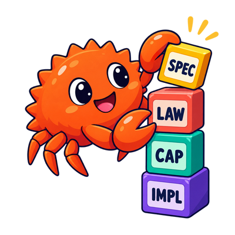

ALUX programming guidelines
ALUX programming guidelines
This book develops the foundation needed to understand and contribute to ALUX’s meaning-first codebase, beginning with a central principle of Denotational Design: define what programs mean before deciding how they work.
Following Conal Elliott, it treats computation as a clear mathematical object rather than an opaque sequence of steps.
Specifications are expressed as simple, compositional capability traits that describe what a program means. Interpreters provide interchangeable ways to realize those meanings.
The result is software whose composition rules, implementation obligations, and valid equations are easier to see and test.
Concepts and Insights explain useful programming machinery. Denotational Design explains how to decide what machinery should preserve.
How to read this book
Read the book in three layers:
- The Semantic View introduces denotations and compositionality, laws and interpretations, and the relationship between meaning and representation.
- Design by Meaning in Rust turns that view into small capabilities, derived extensions, first-order programs, and thin interpreters.
- Concepts and Insights explain important execution models, encodings, transformations, and connections.
The semantic principles are language-agnostic. Rust is the primary implementation language, and a concurrent language pipeline connects these principles to Tolang.
Who this book is for
- Programmers who want complex software to remain modular, composable, testable, and maintainable as it evolves.
- Developers seeking to connect category theory, type systems, and program design.
- Readers familiar with representational and operational techniques—such as free monads, continuation-passing style (CPS), and defunctionalization—who want to understand how that machinery serves, rather than defines, meaning-first design.
- Readers familiar with dependent types and proof-oriented programming who want to apply that mental model while writing high-performance Rust.
- Contributors who need to read meaning-first Rust specifications and understand how a concurrent language can be compiled without making its compiler the definition of the language.
Why meaning comes first

Denotational Design chooses a program's meaning first, then derives vocabulary, representation, and execution strategy to preserve it. This page contrasts that semantic order with the representation-first order most software follows.
Most software is designed in the order in which it will run:
- Choose state.
- Choose control flow.
- Expose methods around that machinery.
- Explain afterward what the methods were intended to mean.
Denotational Design reverses that order:
- Choose meaning.
- Identify its compositional structure.
- Derive a vocabulary from that structure.
- Choose representations and execution strategies.
- Verify that they preserve the meaning.
This reversal is the semantic view.
Concepts and Insights explain useful programming machinery. Denotational Design explains how to decide what machinery should preserve.
Three questions
Keep three questions separate while designing a program.
| View | Question | Typical artifacts |
|---|---|---|
| Semantic | What does this program mean? | values, relations, functions, equations, laws |
| Representational | How is that meaning encoded? | Rust types, traits, ASTs, tables, trees, bytecode |
| Operational | How does the representation execute? | loops, mutation, tasks, messages, interpreters, virtual machines |
All three views matter. The mistake is allowing representation or execution to silently define the semantic view.
An operational semantics is a precise and valuable account of execution. It can describe every transition made by an evaluator. It still answers a different design question from a denotational account. The denotational question is which observable mathematical value the whole program denotes and which equations should hold regardless of execution strategy.
A small example
Suppose a system identifies positions in a branching process.
A representation-first design may begin with a bit vector:
struct BranchId(Vec<bool>);Methods then grow around the fields: append a bit, slice a prefix, compare vectors, serialize bytes.
The semantic view starts elsewhere:
- There is a root position.
- A position can grow left or right.
- One position may be an ancestor of another.
- The path between ancestor and descendant can be observed.
Those statements remain meaningful if the representation later becomes an integer, a tree coordinate, a compact hybrid value, or a database key. The bit vector is one interpretation of branch position, not its definition.
Meaning is not documentation after the fact
Writing prose about a concrete API does not make the design denotational. Meaning must constrain the API before the representation is chosen.
A semantic account should tell us:
- which distinctions matter
- which observations are primitive
- how larger meanings compose
- which equations are valid
- what every implementation must preserve
- which details are intentionally forgotten
If the only precise artifact is a state struct or an execution loop, the implementation still owns the meaning.
Abstraction versus meaning
An interface can hide machinery without explaining meaning:
trait ApplicationContext {
fn database(&self) -> &Database;
fn settings(&self) -> &Settings;
fn runtime(&self) -> &Runtime;
}This interface abstracts access to concrete components. It does not state the semantic observations required by a computation.
A meaning-oriented interface asks for the observation itself:
trait BranchAlg {
type Branch;
fn branch_root(&self) -> Self::Branch;
fn branch_grow(&self, branch: &Self::Branch, direction: Direction) -> Self::Branch;
fn branch_path(
&self,
ancestor: &Self::Branch,
descendant: &Self::Branch,
) -> Option<Vec<Direction>>;
}Dependency inversion is helpful, but Denotational Design demands more: the abstraction boundary must be organized around meaning rather than storage location.
The direction of authority
When artifacts disagree, do not give authority to whichever one is closest to running code. Ask what each artifact is required to preserve.
| Role | What belongs here | Responsibility |
|---|---|---|
| Meaning | Intended observations, distinctions, and equalities of the domain | Decides what correctness means |
| Specification | Semantic domains, denotations, types, primitive operations, laws, and derived compositions | States that meaning precisely |
| Realization | Concrete representations, interpreters, compilers, runtimes, storage, and scheduling | Implements the specification without changing it |
| Evidence | Proofs, law checks, scenarios, and cross-interpreter comparisons | Connects a realization to the specification; it does not define the meaning by itself |
This gives a practical rule for resolving disagreement:
- If an implementation violates a semantic law, change the implementation.
- If a test contradicts the law it was meant to check, change the test.
- If the formal specification fails to express the intended domain meaning, revise the specification.
An artifact is classified by its role, not its syntax. A Rust trait or first-order program may belong to the specification when it directly preserves chosen semantic structure; another Rust type may be only one concrete encoding. A formal operational semantics may also be part of a language specification, but its transitions remain accountable to the observations and equivalences the language intends.
CPS, defunctionalization, free monads, virtual machines, protocol runtimes, and compiler pipelines can now be placed without asking which one is the final abstraction. Each is a useful representation or execution technique for particular consumers. The semantic specification tells us what every chosen technique must preserve.
Denotations and compositionality
A denotation is a meaning function from syntax to a chosen semantic domain. A semantics is compositional when the meaning of a whole is fixed by the meanings of its parts, which is what makes semantic equality and safe substitution possible.
A denotation is the meaning assigned to a piece of syntax or a programming construct. We often write:
for “the meaning of expression e.”
The brackets do not require the denotation to be a number. Depending on the domain, a program may denote:
- a value
- a function
- a relation
- a set of possible outcomes
- a state transformation
- a probability distribution
- a process behavior
- a partial result
The first design decision is therefore not “which struct should hold this?” It is “what semantic domain contains the meanings we care about?”
Semantic domains
For arithmetic expressions, a simple domain may be the integers:
For formatting, the same expression language may be interpreted into text:
For an effectful computation, the domain might be a state transformation:
For a concurrent language, the domain may describe observable process behavior rather than one predetermined trace.
The chosen domain determines which differences are meaningful. If timing is absent from the domain, two implementations with different timing may still denote the same program. If resource consumption is included, that same difference may become semantic.
Abstraction forgets intentionally
A useful denotation forgets irrelevant machine detail.
For a branch position, the denotation may preserve the path from the root while forgetting:
- byte layout
- allocation strategy
- cache behavior
- serialization format
For an HTTP program, a portable denotation may preserve method, path, input roles, operation, and output role while forgetting which router or executor will host it.
For a compiler stage, the denotation may preserve the translation from normalized source to executable meaning while forgetting temporary buffers and traversal order.
Forgetting is not a defect. It is what makes alternative representations equivalent.
Compositionality
A semantics is compositional when the meaning of a whole is determined by the meanings of its parts and the way they are combined.
For addition:
For sequential function composition:
For a parallel process operator, the semantic domain needs a corresponding parallel composition:
The exact operator depends on the chosen process model. The important point is that syntax composition maps systematically to semantic composition.
Compositionality gives local reasoning. If two parts have the same denotation, one may replace the other inside any compositional context:
This is the foundation beneath safe substitution and semantic refactoring.
Semantic equality
Programs need not be textually or operationally identical to be semantically equal.
Consider two implementations of branch position:
and an integer encoding that denotes the same path. Their memory values differ. Their denotations may be equal.
Similarly, two compiler passes may traverse syntax in different orders but produce executables with the same specified behavior. Whether byte-for-byte equality is required is a separate, stronger law.
Always name the equality being claimed:
- value equality
- structural equality
- canonical representation equality
- trace equivalence
- bisimilarity
- observational equivalence
- denotational equality
Confusing these equalities is a common source of false laws.
Externality is relative
Suppose a computation has meaning:
Relative to H, evidence E is external. If a new abstraction chooses H × E as its carrier, that evidence becomes internal to the new boundary.
This observation matters for effects and context. No fact is absolutely “environmental.” The question is whether the current semantic carrier includes it and which laws govern it.
Do not solve this boundary question with a universal context object. Name each admitted meaning as a capability or explicit value.
Primitive and derived meaning
Primitive operations are those chosen as the vocabulary of the semantic domain. Derived operations are defined from them.
For branch positions, a small primitive vocabulary might be:
- A root position
- Growth by a direction
- Observation of a path from one position to another
Then these may be derived:
- Grow left
- Grow right
- Construct from a path
- Test whether one position is an ancestor of another
- Test whether one position is a descendant of another
The distinction is a design choice, not a metaphysical fact. Prefer a small primitive set that makes laws and alternative interpretations easy to state.
A useful test
Before introducing a programming interface, complete these sentences:
- Values of this abstraction mean ...
- The primitive observations are ...
- The meaningful compositions are ...
- Two values are equivalent when ...
- Every implementation must preserve ...
- The abstraction intentionally forgets ...
If these sentences cannot be completed, more implementation machinery will not supply the missing meaning.
Denotational Design
Denotational Design derives a programming interface from simple, compositional, implementation-independent meanings, letting semantics guide the design rather than describing an interface after the fact.
Denotational Design is the practice of deriving a programming interface from simple, compositional, implementation-independent meanings.
The methodology was developed and named by Conal Elliott. Its central move is not merely to assign semantics to an existing language or API. It is to let semantics guide the design of the API itself.
The design loop
Use this order:
- Choose the semantic domain.
- Identify the structure that matters in that domain.
- Choose a small vocabulary of primitive operations.
- Derive useful operations compositionally.
- State the laws those operations obey.
- Choose one or more representations.
- Implement interpretations that preserve the structure.
- Validate them with laws, models, and scenarios.
Representation-first design commonly starts at step 6 and attempts to reconstruct steps 1–5 afterward.
Designing a branch algebra
Return to branch positions. The desired meaning is a finite path in a binary branching structure.
One possible primitive algebra is:
The partial arrow means that the path observation exists only when the first branch is an ancestor of the second.
Useful operations follow:
This algebra does not mention vectors, integers, fractions, database keys, or bytes. Those choices come later.
Structure before convenience
The primitive vocabulary should reveal the structure downstream code depends on. It should not be a collection of every convenient method available on one implementation.
This trait is a bundle of storage arrangement, configuration location, bit representation, and a compound workflow. It does not isolate branch meaning:
trait BranchManager {
// not recommended: exposes machinery, not semantic observations
fn storage(&self) -> &BranchTable;
fn config(&self) -> &BranchConfig;
fn raw_bits(&self) -> &[u64];
fn grow_and_save(&mut self, right: bool);
}A semantic API may still include effects when effects are part of the chosen domain. The rule is not “everything must be pure.” The rule is “every primitive must state a coherent meaning.”
Encoding is not methodology
Denotational Design does not require:
- Haskell
- tagless-final encoding
- object algebras
- free monads
- one AST
- pure functions only
- category-theory terminology in every API
These may be useful encodings or explanatory tools. None defines the method.
In Rust, small traits, associated types, extension methods, generic functions, and first-order program values are practical encodings. Their value depends on whether they preserve a clear semantic design.
Type-class morphisms
One way to understand the method is through structure-preserving mappings.
Suppose an interface describes a semantic algebra. An implementation maps its abstract values and operations into a concrete representation. A valid implementation must preserve the relevant operations and laws.
If encode maps abstract branches into a concrete carrier, preservation of growth looks like:
The implementation is not merely a bag of methods with matching names. It is intended to be a morphism that respects the algebraic structure.
What counts as a good abstraction
A good DD abstraction has several properties:
- Its values have a simple intended meaning.
- Its primitives expose semantic observations or constructions.
- Larger behavior is derived from those primitives.
- Its laws do not depend on one representation.
- Independent implementations can interpret it.
- Operational details appear only where they become relevant.
Smallness alone is not enough. A tiny trait exposing get_manager() is still representation-first. A larger algebra may be justified when its operations form one coherent semantic structure.
Semantic values and abstract carriers
Not every concrete type is forbidden from a specification.
Use an associated type when the interpreter should choose the carrier:
trait BranchAlg {
type Branch;
}Use a concrete type when it is stable semantic vocabulary:
enum Direction {
Left,
Right,
}The distinction is not “abstract good, concrete bad.” It is semantic vocabulary versus accidental machine representation.
The specification is the denotation, and it need not execute
The specification is the denotation: the mathematical meaning assigned to each construct. Its power comes from being free of the constraints of efficiency and even of executability.
It is often much easier and more enlightening to define a denotation than an implementation, because it does not have any constraints or distractions of efficiency, or even of executability.
— Denotational Design: from meanings to programs (LambdaJam 2015)
The canonical example is FRP (Functional Reactive Programming): a Behavior a is defined as a function of continuous time,
That model is precise but not executable — you cannot enumerate the reals. A program may likewise denote a set of outcomes; neither model runs, and that is the point. The meaning is chosen for simplicity and precision, not for how it will compute.
Executability and efficiency are pushed entirely onto the implementation, a separate artifact held correct by homomorphism laws (type class morphisms) that relate it back to the meaning: the meaning function must carry each syntactic composition to the corresponding semantic one. As Conal puts it, the denotation gives "an unambiguous definition of exactly what to implement, while leaving a great deal of room for creativity about how."
In Rust, several artifacts express parts of this specification, and some of them happen to be executable. Executability is incidental; it is not what makes them a specification:
- prose states intended meaning
- traits state available primitives
- extensions state derivations
- laws state required equalities
- interpreters demonstrate realizability
- tests provide finite evidence
Read them together, with meaning and laws above concrete machinery in authority.
Further reading
- Denotational Design: from programs to meanings (BayHac 2014)
- Denotational design with type class morphisms
- Conal Elliott's writings and talks
Laws and interpretations
Laws state how the operations of a semantic interface relate, and an interpretation assigns concrete carriers that must preserve those laws. The chosen equality fixes which differences between interpreters are meaningful and which are free.
A semantic interface names operations. Laws say how those operations relate. Without laws, two implementations may satisfy the same Rust signatures while disagreeing about the abstraction.
Laws complete the vocabulary
For branch positions, useful laws include:
These laws explain more than method comments can. They describe identity, reconstruction, reflexivity, and separation.
Not every attractive equation is valid. For example, a fixed-width representation may overflow at extreme depth. That is either:
- an interpreter limitation outside its admitted domain
- a semantic error that the interface must expose
- evidence that the chosen carrier is wrong
The design must say which.
Interpretation
An interpretation assigns concrete carriers and operations to a semantic algebra.
| Semantic program | Possible interpretations |
|---|---|
| Branch position | Bit path, numeric tree, symbolic form |
| Expression program | Evaluator, pretty-printer, optimizer |
| Typed API program | Executable server routes, documentation, client generator |
The same program can have several interpretations because the program is not identical to any one result.
Implementation obligations
An interpreter must preserve the structure claimed by the specification.
If merge is associative in the semantic program:
then interpreters should preserve the observable meaning of that association. If route order is also specified, the equality must include order. If order is intentionally forgotten, implementations may differ operationally while remaining semantically equal.
This is why the semantic domain and equality must be chosen before writing laws.
Laws, proofs, and tests
These terms are not interchangeable:
- A law is a universally intended property of the abstraction.
- A proof establishes a law under stated assumptions.
- A property test checks many generated examples.
- A scenario test checks one meaningful finite situation.
- A unit test checks one concrete behavior.
Tests are executable evidence, not universal proof. They are still valuable because they can be reused against every interpreter.
Executable evidence
Semantic laws are independent of their implementations. Executable checks provide finite evidence that an interpreter preserves those laws: property checks exercise equation-like claims, while scenarios exercise observable interactions. When written only in terms of semantic operations, the same evidence can be reused across compatible interpreters. Tests support a specification; they do not define or prove it.
The Rust encodings are developed in Laws, scenarios, and evidence.
Multiple interpreters clarify meaning
A second implementation is not required for every small trait, but it is a powerful design test.
If a supposedly abstract law can only be stated using fields from the first implementation, the semantic boundary is probably wrong. If a second interpreter can implement the primitives and satisfy the same laws without imitating the first representation, the abstraction is gaining credibility.
Neutral interpreters are especially useful:
- a text interpreter reveals program structure
- a pure in-memory model isolates laws
- a tracing interpreter reveals selected observations
- a production interpreter performs real effects
Equality determines refactoring freedom
Every semantic equality grants implementation freedom. If two representations are equal by the chosen denotation, an implementation may replace one with the other.
Every omitted observation also grants freedom. If allocation order is not semantic, it may change. If method order is semantic, it must not.
Laws are therefore not only correctness constraints. They define the safe space for optimization, replacement, and evolution.
Checkpoint
Before proceeding to Rust encodings, verify that you can answer:
- What is the semantic carrier?
- What does the abstraction intentionally forget?
- Which operations are primitive?
- Which operations are derived?
- What equality is being used?
- Which laws must every interpreter preserve?
- What evidence will be shared across interpreters?
The rest of the book shows one practical Rust answer. It is an encoding of this semantic picture, not a replacement for it.
Dependent types and proofs
Dependent types express value-indexed propositions and evidence in a type system. They can encode part of a semantic specification, but they do not choose that specification: the intended property must be clear before it is promoted into a type.
Types indexed by values
A type is dependent when it can depend on a value. A dependent type can therefore describe not only the shape of a value, but also a relationship that the value must satisfy.
Examples include:
Vec<n, T>— a vector indexed by its lengthnMatrix<rows, cols, T>— a matrix indexed by its dimensionsProof<p>— evidence for a propositionp
For example:
append : Vec<n, T> -> Vec<m, T> -> Vec<n + m, T>
The result type states that appending vectors of lengths n and m produces one of length n + m.
Dependent functions
A dependent function type is written:
For each value of type , the result has type . Compare:
The result type of is fixed. The result type of may vary with its input.
Under the propositions-as-types correspondence, a type can state a proposition and a term inhabiting that type can serve as its proof. This supports APIs in which invalid states, transitions, or compositions cannot be constructed.
Relationship to Denotational Design
Denotational Design asks first:
- What is the semantic domain?
- Which observations and compositions matter?
- Which laws must hold?
Dependent types can then internalize some of those answers. A type index might record a vector length, protocol state, stack depth, resource bound, or proof that two constructions denote the same result.
The order matters. A sophisticated type does not supply missing meaning. It strengthens a specification only when the indexed proposition already describes an intended semantic distinction or a deliberately chosen representation invariant.
Both may be encoded in types, but they have different authority. A semantic proposition must be preserved by every compatible interpreter. A representation invariant constrains only the representation that chose it.
Proofs and executable evidence
A proof establishes a proposition under stated assumptions. Property tests, scenarios, and unit tests provide finite executable evidence. Encoding a proposition in a dependent type may let type checking verify a proof term, but it does not turn testing into proof or make the compiler the source of the proposition.
This is the same separation used throughout the book: meaning and laws state the obligation; tools check or realize it.
Applying the model in Rust
Rust is not a fully dependently typed language, but const generics, typestate, associated types, and trait bounds can express useful indexed relationships. These encodings can move checks to compile time and often preserve efficient concrete representations.
The proof-oriented mental model remains valuable even when Rust cannot express the complete proposition. State the invariant explicitly, encode the part the type system can enforce, and retain laws or tests for the remainder. The encoding serves the specification; it does not replace it.
typed-grid-rs realizes the Matrix<rows, cols, T> idea above in stable Rust. Each cell becomes a type indexed by its coordinate — Pos0x0, Pos1x2, and so on — and a move returns a different position type:
Pos0x0.right() denotes Pos1x0; stepping off an edge is not a runtime error but a program that does not typecheck, because the corresponding move is never generated at the boundary.
This is the same lift the section describes: the coordinate that would live in the value world is promoted into the type, and valid navigation becomes a total, compile-time-checked function. The marker types are zero-sized, so the indexed proposition costs nothing at run time.
Capability algebras

A capability trait is a small algebra: it names the primitive observations and transformations a meaning requires and leaves representation to the interpreter. Design the vocabulary from meaning, not from the fields a first implementation happens to hold.
Rust does not have a built-in construct called “Denotational Design.” We encode semantic vocabularies with ordinary language features. Small capability traits are one useful encoding.
The suffix Alg in this book means algebra: a coherent set of primitive operations over interpreter-chosen carriers.
Start from meaning
The branch-position meaning from the previous part can be expressed as:
#[derive(Clone, Copy, Debug, PartialEq, Eq)]
pub enum Direction {
Left,
Right,
}
pub trait BranchAlg {
type Branch;
fn branch_root(&self) -> Self::Branch;
fn branch_grow(&self, branch: &Self::Branch, direction: Direction) -> Self::Branch;
fn branch_path(&self, ancestor: &Self::Branch, descendant: &Self::Branch) -> Option<Vec<Direction>>;
}The trait states three primitive meanings:
- construct the root
- grow a branch in one direction
- observe the relative path when it exists
It does not reveal where branches are stored or how paths are encoded.
Capabilities are not field projections
Compare:
trait BranchContext {
fn branches(&self) -> &Vec<Vec<bool>>;
fn branches_mut(&mut self) -> &mut Vec<Vec<bool>>;
}This trait hides a struct behind methods but still exposes its representation. Any derived logic becomes coupled to vectors, booleans, ownership, and mutation strategy.
A semantic capability exposes the observation or transformation downstream meaning requires. Ask:
If the implementation used a database, symbolic term, compact integer, or remote service, would this operation still make sense?
If yes, the operation may belong in the capability. If callers need the current field layout, it probably does not.
One primitive meaning per trait
Small traits make dependencies visible:
pub trait ClockAlg {
type Instant;
fn clock_now(&self) -> Self::Instant;
}
pub trait DeadlineAlg<Instant> {
fn deadline_expired(&self, now: &Instant) -> bool;
}A derived operation that needs time and a deadline can require both traits. It does not need an ApplicationContext containing logging, storage, networking, configuration, and scheduling.
“Small” does not mean one method mechanically. Group operations when they form one inseparable semantic structure. Split them when they express independent meanings or admit independent interpreters.
Associated types select carriers
Use associated types when the interpreter chooses representation:
pub trait SourceAlg {
type Source;
type Error;
fn source_read(&self, name: &str) -> Result<Self::Source, Self::Error>;
}Do not require String, std::io::Error, or a concrete syntax tree unless those are stable semantic vocabulary at this boundary.
Conversely, concrete semantic values are welcome:
pub enum Severity {
Warning,
Error,
}The rule is not “make every type abstract.” The rule is “do not confuse interpreter machinery with semantic vocabulary.”
Put bounds where they are used
Keep a primitive free of constraints it does not need:
pub trait CandidateAlg {
type Candidate;
fn candidates(&self) -> impl Iterator<Item = Self::Candidate>;
}Do not constrain the associated type merely because one future algorithm might need it:
pub trait CandidateAlg {
// not recommended: every interpreter now pays for bounds
// most operations never use
type Candidate: Clone + Ord + Hash + Send + Sync;
fn candidates(&self) -> impl Iterator<Item = Self::Candidate>;
}The operation that sorts candidates can require Ord; the operation that places them in a hash set can require Hash.
Use-site bounds keep primitive meanings reusable and reveal the real contract of derived behavior.
Effects can be primitive meaning
Capability traits do not imply pure execution:
pub trait PublishAlg {
type Document;
type Error;
async fn publish(&self, document: Self::Document) -> Result<(), Self::Error>;
}Publishing is an effect. It may still be a primitive semantic operation at the current boundary. The concrete interpreter may use HTTP, a queue, a file, or a test buffer.
The semantic layer should not prescribe retries, socket ownership, task spawning, or connection pools unless those distinctions are part of the intended meaning.
Naming the boundary
Capabilities should be phrased from the consumer's semantic perspective:
| Meaning-oriented | Representation-oriented |
|---|---|
closed_outcome(slot) | get_runtime_map(slot) |
source_read(name) | compiler_context().sources().lookup(name) |
branch_path(ancestor, descendant) | raw_branch_bits(id) |
Naming is design. A mechanical name invites mechanical coupling.
Review checks
- Does the trait expose one coherent primitive meaning?
- Could an independent interpreter implement it without copying the first representation?
- Are associated types abstract only where the interpreter genuinely chooses?
- Are concrete types stable semantic vocabulary?
- Are bounds absent until an operation uses them?
- Does the trait avoid returning managers, contexts, and raw storage?
Semantic types in Rust
Meaning-first Rust uses types to keep semantic structure visible. Associated types name carrier families, bounds state relationships between them, and extensions derive new operations from explicit premises. Laws still determine what every interpretation must preserve.
Several different roles are all spelled type in Rust. Keeping them distinct prevents meaning from collapsing into representation.
| Role | Example | What it says |
|---|---|---|
| Semantic type | Direction | Which domain distinctions matter |
| Interpreter-selected carrier | BranchAlg::Branch | Which representation an interpreter chooses |
| Derived operation | BranchExt::branch_child | What follows from declared capabilities |
| Stage type | Syntax, CoreProgram, Executable | Which transformation a value has passed |
| Representation type | BitBranch | How one interpreter stores branch meaning |
| Evidence program | A scenario or reusable law extension | Which observations compatible interpreters must satisfy |
Semantic types before representation
Suppose a branching domain distinguishes two directions:
#[derive(Clone, Copy, Debug, PartialEq, Eq)]
enum Direction {
Left,
Right,
}Direction names the distinction directly. One interpreter may encode a path compactly:
struct BitBranch(Vec<bool>);The booleans belong to that representation. They are not the definition of left and right, and another interpreter need not use them.
Do not define domain behavior by bit positions, byte offsets, or machine branches. Those artifacts must encode the semantic distinctions; they do not own them.
This separation lets storage and execution layouts change without silently changing the domain.
Associated types choose carriers
A capability algebra can leave its carrier to each interpreter:
trait BranchAlg {
type Branch;
fn branch_root(&self) -> Self::Branch;
fn branch_grow(&self, branch: &Self::Branch, direction: Direction) -> Self::Branch;
fn branch_path(
&self,
ancestor: &Self::Branch,
descendant: &Self::Branch,
) -> Option<Vec<Direction>>;
}Self::Branch is not a hidden field type. It is the carrier chosen by an interpretation of branch meaning. A bit path, numeric tree position, symbolic term, or another representation can satisfy the same algebra.
For an interpreter T, the notation T::Branch can be read as a carrier family . Changing the interpreter may change the carrier, while every operation remains indexed consistently by the same choice.
Extensions derive consequences
An extension can construct a new operation from exactly the premises it needs:
#[ext(name = BranchExt)]
pub impl<This> This
where
This: BranchAlg,
{
fn branch_child(
&self,
branch: &This::Branch,
direction: Direction,
) -> This::Branch {
self.branch_grow(branch, direction)
}
}The where clause is the premise: This interprets the branch algebra. The method is the consequence: for that interpreter's carrier, a branch and a direction determine a child branch.
Nothing in the derivation chooses a concrete branch representation. The result remains in the carrier family selected by the interpreter.
Equality bounds state compatibility
Two capabilities sometimes need to agree on a carrier. An associated-type equality can state that requirement without selecting a concrete representation:
Right: BranchAlg<Branch = Left::Branch>Read the bound as a local proposition: Left and Right interpret branch operations over the same carrier. Put this equality at the operation that needs the agreement rather than forcing it onto either algebra globally.
Such a bound is stronger and more precise than accepting one concrete context merely because it happens to contain both implementations.
Stage types make compiler contracts visible
A compiler pipeline should not pass one undifferentiated tree through every phase. Distinct stage types state which transformation has occurred:
| Stage | Input | Output | Contract |
|---|---|---|---|
| Parse | Source text | Syntax | Recognizes surface grammar |
| Normalize | Syntax | CoreProgram | Produces the chosen core meaning |
| Code generation | CoreProgram | Executable | Preserves program observations in executable form |
| Runtime | Executable | Observable behavior | Interprets the executable consistently with the language model |
These types prevent accidental stage confusion, but their names alone do not prove preservation. The transformations still need stated laws, representative scenarios, and cross-interpreter evidence.
Read the contract
The type-level structure admits a useful logical reading:
| Rust form | Reading |
|---|---|
This: BranchAlg | This supplies an interpretation of branch meaning |
This::Branch | The branch carrier is selected by This |
Right: BranchAlg<Branch = Left::Branch> | Two interpretations agree on their carrier |
-> This::Branch | The result remains in the selected carrier family |
This reading encourages APIs to expose what determines a type, which equalities composition requires, and which conclusions follow from those premises. Associated types, generic associated types, const generics, typestate, and zero-sized witnesses can all express parts of such contracts when the underlying distinction is real.
Do not manufacture type-level machinery merely to make an implementation look more formal. A type should expose meaning or preserve a necessary relationship, not decorate a representation.
Types do not replace laws
A type signature constrains which programs can be formed. Laws constrain how their operations relate. Both are required.
For example, BranchAlg::Branch says that each interpreter chooses a branch carrier. It does not by itself establish that:
- the path from a branch to itself is empty
- replaying a root path reconstructs the branch
- opposite children are distinct
Those are semantic laws shared by compatible interpreters. Representation-specific claims—such as unused bits being zero—belong to the interpreter that chose that representation.
Ask what each type claims, what determines it, which laws complete it, and which interpreter realizes it.
Review checks
- Does a domain distinction appear before its compact machine encoding?
- Is an associated type an interpreter-selected carrier rather than disguised concrete state?
- Do equality bounds state only the compatibility required at that use site?
- Do distinct compiler stages have distinct types and explicit contracts?
- Are semantic propositions separated from representation invariants?
- Are claims that Rust cannot express backed by reusable laws or scenarios?
Derived meaning and composition
Derived behavior belongs to the capabilities it uses, written once as an extension over those bounds, not to any concrete type that happens to implement them. The where clause is the honest statement of what a derivation depends on.
Primitive capabilities provide vocabulary. Most application behavior should be derived from that vocabulary once and shared by every interpreter.
Extensions own derivations
Using the extend crate, branch operations can be derived independently of representation:
use extend::ext;
#[ext(name = BranchExt)]
pub impl<This> This
where
This: BranchAlg,
{
fn branch_child(&self, branch: &This::Branch, direction: Direction) -> This::Branch {
self.branch_grow(branch, direction)
}
fn branch_left(&self, branch: &This::Branch) -> This::Branch {
self.branch_child(branch, Direction::Left)
}
fn branch_right(&self, branch: &This::Branch) -> This::Branch {
self.branch_child(branch, Direction::Right)
}
fn branch_is_ancestor(&self, ancestor: &This::Branch, descendant: &This::Branch) -> bool {
self.branch_path(ancestor, descendant).is_some()
}
}The where clause is the complete semantic dependency declaration: BranchAlg, and nothing more. No concrete branch type owns these definitions.
The macro only removes trait-and-impl boilerplate. An ordinary extension trait can express the same design. Denotational Design is in the semantic boundary and derivation, not in the attribute.
Why not put it on the struct?
This is representation-first. If a numeric branch carrier is introduced, the derivation is copied or reimplemented, and the first concrete type has accidentally become the specification.
impl BitBranchStore {
// not recommended: derived branch meaning welded to one bit representation
fn is_ancestor(&self, a: &BitBranch, b: &BitBranch) -> bool {
// derived branch meaning mixed with bit storage
}
}Extensions reverse the ownership:
| Layer | Responsibility |
|---|---|
| Semantic capability | Owns derived meaning |
| Concrete type | Interprets primitive meaning |
Compose with bounds
When one receiver interprets several capabilities, use direct bounds:
#[ext(name = PublishCurrentExt)]
pub impl<This, Document, Error> This
where
This: DocumentAlg<Document = Document> + PublishAlg<Document = Document, Error = Error>,
{
async fn publish_current(&self) -> Result<(), Error> {
self.publish(self.document_current()).await
}
}Do not create a supertrait merely to shorten the bound:
trait AppContext: DocumentAlg + PublishAlg {}The bundle hides which operation consumes which capabilities and creates another interface every interpreter must satisfy.
Five different composition meanings
Choose the form that truthfully describes the relationship.
| Situation | Rust shape |
|---|---|
| One receiver interprets several capabilities | Direct bounds |
| A separate value selects behavior | Explicit policy parameter |
| Independent policies compose statically | Product or ordinary struct |
| An environment carries another interpreter | Small HasX projection |
| A wrapper substitutes for an inner interpreter | Delegation |
Explicit policy
If a strategy is independently selected, pass it explicitly to the extension:
#[ext(name = CandidateSelectExt)]
pub impl<This> This
where
This: CandidateAlg,
{
fn select_with<Policy>(&self, policy: &Policy) -> This::Candidate
where
Policy: SelectionPolicyAlg<Candidate = This::Candidate>,
{
policy.select(self.candidates())
}
}The extension owns the shared derivation, while the policy remains an independently selected input. It is not hidden in the environment or chosen by Default.
Product of policies
Independent policies can be composed without inventing inheritance:
struct CompilePolicy<Optimize, Diagnostics> {
optimize: Optimize,
diagnostics: Diagnostics,
}Projection
A HasClock trait says only that an environment can project a separate clock value:
trait HasClock {
type Clock;
fn clock(&self) -> &Self::Clock;
}An operation that reads time adds This::Clock: ClockAlg in its own where clause. The projection remains about containment; the consuming operation states the capability it needs. Use this pattern only when the separation is real. Do not introduce HasX merely to organize fields.
Delegation
Delegation means a wrapper itself can substitute for the inner interpreter. This is appropriate for transparent newtypes, shared pointers, and adapters that preserve the whole capability contract.
Projection says “has.” Delegation says “is.” They are not interchangeable.
Defaults are semantic decisions too
Mechanical empty states may implement Default. Domain policy should usually be explicit.
The useful cases often have an algebraic explanation: the default is the identity element for the type's natural composition. Appending an empty buffer, combining with an empty map, or accumulating zero diagnostics contributes nothing. When that composition is associative, the type and operation form a monoid, and Default can name its neutral element rather than choose a policy.
Good defaults:
- Empty buffer
- Empty map
- Zero accumulated diagnostics
Suspicious defaults:
- Quorum threshold
- Leader policy
- Retry semantics
- Confirmation depth
- Output format
This is the important distinction: a neutral element introduces no decision, while a quorum, leader strategy, or retry rule selects domain behavior. If changing a default changes domain meaning, compose the policy explicitly.
Derived meaning should stay closed
An extension must use only its declared capabilities and explicit inputs. Direct field access, global state, and concrete downcasts make the where clause dishonest.
Review the body as if it were a proof of the dependency declaration:
If not, either the bounds are incomplete or the code belongs at another layer.
Review checks
- Is derived behavior defined once over capabilities?
- Does the extension avoid concrete fields and context types?
- Are direct bounds used for one interpreter?
- Are policies explicit values when independently selected?
- Do projection and delegation make truthful claims?
- Are domain defaults visible in composition?
Interpreters and effects
An interpreter chooses a representation or effect for a capability. It realizes the primitive operations without redefining the domain behavior derived above it, so the same laws hold across every interpreter.
An interpreter realizes a semantic capability with a concrete representation or effect. It should choose machinery without redefining domain behavior.
A thin interpreter
A bit-path representation of branches might be:
#[derive(Clone, Debug, PartialEq, Eq)]
struct BitBranch(Vec<Direction>);
struct BitBranchImpl;
impl BranchAlg for BitBranchImpl {
type Branch = BitBranch;
fn branch_root(&self) -> Self::Branch {
BitBranch(Vec::new())
}
fn branch_grow(&self, branch: &Self::Branch, direction: Direction) -> Self::Branch {
let mut grown = branch.0.clone();
grown.push(direction);
BitBranch(grown)
}
fn branch_path(&self, ancestor: &Self::Branch, descendant: &Self::Branch) -> Option<Vec<Direction>> {
descendant.0.strip_prefix(&ancestor.0[..]).map(<[Direction]>::to_vec)
}
}The implementation stores and observes primitive facts. branch_left, branch_right, and branch_is_ancestor remain in the shared extension.
Interpreters are boundary-relative
The same type can be an interpreter at one boundary and a semantic input at another.
| Boundary | Consumes | Interprets |
|---|---|---|
| Filesystem adapter | Filesystem access | Source lookup |
| Normalizer environment | Source lookup as a primitive capability | Normalized-language construction |
| Compiler pipeline | Normalized terms | Executable construction |
There is no single universal “implementation layer.” There are nested semantic boundaries.
Effects at the edge
Concrete interpreters own choices such as:
- database layout
- asynchronous runtime
- task ownership
- retry strategy
- HTTP or RPC framework types
- serialization
- locks and channels
- caching
Keep these choices out of semantic traits unless callers need to observe them.
For example, a semantic source capability can return a source value and error. Its production interpreter may cache files and perform asynchronous reads. A test interpreter may use an immutable map. Derived normalization logic should work with both.
Runtime ownership
Framework callbacks often require owned, cloneable, thread-safe state. That is an interpreter constraint, not necessarily a domain constraint.
Avoid polluting a primitive operation with framework carriers:
async fn status(data: FrameworkData<Arc<AppState>>) -> FrameworkJson<Status>;Prefer semantic application:
trait StatusAlg {
type Status;
async fn status(&self) -> Self::Status;
}The web interpreter can choose Arc<Context>, extract request inputs, call status, and convert the result. Domain callers need not know that a web server exists.
Neutral interpreters
Not every interpreter needs to execute effects.
A text interpreter for an API program can record:
| Method | Path | Input | Output |
|---|---|---|---|
GET | /status | — | JSON Status |
POST | /temperature | JSON f32 | JSON Status |
A metadata interpreter can construct documentation. A test interpreter can collect operation names. A production interpreter can build server routes.
Neutral interpreters demonstrate that the program carries meaning independently of one runtime.
Adapters and delegation
Concrete wrappers often forward capabilities:
struct Shared<T>(Arc<T>);If Shared<T> truthfully behaves as the same interpreter as T, delegation is appropriate. If a larger environment merely stores T among unrelated services, projection is more honest.
Generated delegation removes boilerplate but does not establish semantic substitutability. Review the claim before applying the macro.
Errors belong to a boundary
Errors should communicate failure meaning at the boundary that handles them.
| Error | Boundary translation |
|---|---|
| Domain error | Transport interpreter maps it to a protocol response |
| Parse error | Compiler front end maps it to a diagnostic |
| Storage error | Source interpreter maps it to a semantic source failure |
Do not force HTTP status codes, RPC error objects, or database errors into primitive domain traits. Translate them at interpreter boundaries.
Performance is an interpretation concern until observed
Batching, parallelism, caching, and data layout usually belong to interpreters. They become semantic only when the specification promises observable ordering, timing, resource use, fairness, or failure behavior.
This separation allows optimization without semantic drift:
- Same laws
- Same declared observations
- Different operational strategy
Review checks
- Does the interpreter implement primitives rather than duplicate derivations?
- Are runtime and framework constraints confined to the consuming boundary?
- Could a neutral or test interpreter implement the same capability?
- Are transport and storage errors translated at the edge?
- Is delegation semantically truthful?
- Are performance differences unobservable under the stated denotation?
Laws, scenarios, and evidence
Tests are evidence for a specification. Assert the public observations and the laws the chosen domain supports, not private execution steps, and keep those laws generic over the capability so every interpreter is held to them.
Meaning-first code needs meaning-first tests. Test public observations and laws rather than private execution steps.
Test the specification surface
This assertion reaches into one carrier's fields, so no other interpreter can share it:
// not recommended: asserts a bit layout, not a semantic observation
assert_eq!(branch.bits, vec![false, true]);Semantic test:
let root = alg.branch_root();
let left = alg.branch_left(&root);
let left_right = alg.branch_right(&left);
assert_eq!(alg.branch_path(&root, &left_right), Some(vec![Direction::Left, Direction::Right]));The first test may be appropriate for a serialization module whose subject is the bit encoding. It is weak evidence for the branch algebra because alternative representations cannot share it.
Reusable law extensions
When a property applies to every compatible interpreter, write it once:
use anyhow::{Result, bail, ensure};
use extend::ext;
#[ext(name = BranchLawsExt)]
pub impl<This> This
where
This: BranchAlg,
This::Branch: Clone + Eq,
{
fn check_branch_root_round_trip(&self, directions: &[Direction]) -> Result<()> {
let root = self.branch_root();
let branch = directions.iter().copied().fold(root.clone(), |branch, direction| self.branch_grow(&branch, direction));
let Some(path) = self.branch_path(&root, &branch) else {
bail!("grown branch has no path from root");
};
ensure!(path == directions, "root path did not round-trip");
Ok(())
}
}Every interpreter runs the same checker. anyhow::Result carries the outcome; bail! reports the missing observation, while ensure! checks the round-trip law. The checker distinguishes the two failures without depending on one branch representation.
Useful law families
Look for properties already suggested by the semantic structure:
- identity
- associativity
- commutativity, when genuinely intended
- idempotence
- round-trip
- canonicalization
- refinement
- monotonicity
- substitution
- interpretation agreement
Do not add familiar algebraic words merely because they sound mathematical. State only laws the chosen domain supports.
Laws versus representation invariants
Keep these distinct:
-
Semantic law: reconstructing a branch from its root path denotes the same branch.
-
Representation invariant: unused high bits are zero.
-
Serialization law:
-
Canonical-format law:
All may be important. They belong to different specifications.
Shared scenarios
A scenario is a reusable interaction written against public capabilities. The ALUX test framework represents scenarios this way: authoring code builds a value through Scenario, DeployerIds, PlayAst, and ScenarioSchedule capabilities without naming a concrete runner.
#[ext(name = HelloScenarioExt)]
pub impl<This> This
where
This: StandaloneScenario,
This::Step: PlayAst<Ast = RProc>,
{
fn hello(self) -> This::Scenario {
self.scenario()
.under_comprehensive(100)
.step(
self.play_ast(
self.deployer(0),
tolang! {
let x in {
x ! "hello" |
? (a <- x) a.log()
}
},
)
.expect_log(r#""hello""#),
)
}
}Every call describes authored meaning rather than runner machinery. under_comprehensive(100) requires the expected log under one sequential run, 100 freely concurrent runs, and up to 100 permuted runs. The scenario fixes the observation while the runner varies execution order.
The same principle applies across interpreters: when several runners implement the capabilities used by a scenario, each can interpret the same authored interaction. Runner-specific setup and boundary inspection remain outside the scenario.
Cross-interpreter agreement
When two interpreters expose the same observation, compare them:
This catches drift that independent snapshots miss. It is particularly valuable for API definitions, compiler stages, and alternate data representations.
Finite evidence is not proof
A passing test demonstrates behavior for tested inputs and implementations. It does not prove a law for all values.
Increase assurance deliberately:
- example tests
- reusable scenario tests
- generated property tests
- exhaustive checks over finite domains
- model comparison
- proof artifacts
Choose the level according to risk and claim strength.
Test names should state meaning
Prefer:
reconstructs_every_generated_branch_from_its_root_pathpreserves_child_programs_when_routes_are_mergednormalization_is_invariant_under_alpha_renaming
Avoid names that only narrate implementation:
pushes_three_bitscalls_helper_twicevisits_left_node_first
Operational tests remain valid when operation order is itself specified. Name the observation that makes the order meaningful.
Review checks
- Does every new semantic operation have a focused law or assertion?
- Are reusable obligations generic over public capabilities?
- Are scenarios separated from concrete runners?
- Are semantic laws distinguished from representation invariants?
- Are multiple interpreters compared where practical?
- Does documentation avoid calling finite tests proofs?
First-order programs
Ordinary functions and extensions already express derived behavior. Turn application into first-order data only when another interpreter must inspect, compose, serialize, or compile a program before running it.
Ordinary functions and extension methods are usually the best way to express derived behavior. Sometimes another interpreter must inspect, combine, document, serialize, or compile the structure of a program before applying it. Then application itself must become first-order data.
Execution erases structure
Consider:
#[ext(name = StatusExt)]
pub impl<This> This
where
This: StatusAlg,
{
async fn status_current(&self) -> This::Status {
self.status().await
}
}Calling this method yields a status. After the call begins, an external interpreter cannot generally recover:
- the semantic context type
- the ordered arguments
- source argument names
- the result type
- the identity of the operation
That information was present in the source-level function type, but ordinary execution consumes it.
Defunctionalizing application
Defunctionalization replaces a member of a known family of functions with a first-order tag and a shared application operation.
A minimal operation vocabulary is:
trait OperationAlg {
type Context;
type Args;
const ARG_NAMES: &'static [&'static str];
}
trait ApplyAlg<Handle, Args> {
type Output;
async fn apply(&self, handle: Handle, args: Args) -> Self::Output;
}A zero-sized CurrentStatusOperation<App> can denote application of the original extension method. It should invoke that method, not contain a second copy of its body.
- Begin with the extension method.
- Reify it as an operation type.
- Preserve its context, argument product, argument names, and output.
- Interpret it through
ApplyAlg.
The method remains ergonomic for normal calls. The operation value exists for contexts that require first-order structure.
Do not reify without a consumer
First-order programs add type machinery. Use them when they enable a real second interpretation:
- runtime registration
- documentation or schema generation
- static inspection
- program composition before execution
- serialization
- compilation
If code only needs to call a function, keep the function.
Portable interface programs
Suppose an HTTP surface contains:
| Method | Path | Input | Operation | Output |
|---|---|---|---|---|
GET | /status | — | status_current | JSON |
POST | /set_temperature | Body: f32 | adjust_status | JSON |
GET | /download | — | current_file | Streamed file |
A portable program must preserve:
- method and path selectors
- input roles such as path, query, body, header, and authentication
- the operation value
- output role such as JSON or file
- route merge and nesting
It should not preserve a particular framework request, router, or response type.
One fluent notation might be:
self.routes()
.get("/status", self.op(CurrentStatusOperation::<App>::default()).json())
.post("/set_temperature", self.op(AdjustStatusOperation::<App>::default()).body::<f32>().json())
.get("/download", self.op(CurrentFileOperation::<App>::default()).file())The fluent calls construct a typed program. They do not have to register a server route immediately.
One program, several folds
The same first-order program can support several interpretations:
| Program | Interpretations |
|---|---|
| Typed HTTP program | Text documentation, executable routes, OpenAPI metadata, client bindings, conformance tests |
| Typed JSON-RPC program | Method registry, schema, client, test harness |
Do not maintain separate route or method lists for execution and documentation. That creates competing specifications.
Input and output roles
The operation already knows its argument and result types. A transport declaration should add only transport meaning.
self.op(FindOperation::<App>::default())
.path::<u64>()
.query::<String>()
.json()path, query, and json identify roles. They should not force the author to restate an output type already determined by ApplyAlg.
Output conversion belongs to the transport interpreter. A server may convert one result to JSON and another to a streamed attachment. The semantic operations remain unaware of either representation.
Composition is program meaning
Programs should preserve general composition:
- Empty program
- Merge programs
- Nest a program under a prefix
- Lift an endpoint into a program
These are more fundamental than one framework's router methods. Familiar fluent names such as get, post, merge, and nest can be aliases over the neutral algebra.
Independent specifications can publish small programs:
| Input programs | Composition | Result |
|---|---|---|
| Status and download programs | Merge | Service program |
| Catalog program | Nest | Service program |
An application selects and interprets the resulting composition.
Macros must lower to public meaning
Rust macros can make first-order declarations pleasant:
#[ext(name = StatusApiExt, defunc(via = http))]
pub impl<This> This
where
This: HttpApiAlg + JsonOutAlg,
{
fn status_api<Alg>(&self)
where
Alg: StatusAlg,
{
self.routes().get("/status", self.op(Alg::status_current).json());
}
}The macro is healthy only when it lowers to a public, manually constructible first-order program. Generated callbacks must not become the sole definition of the interface.
Good direction:
- Convenient syntax
- Public operation and program values
- Generic fold
- Concrete framework
Representation-first direction:
- Framework annotation
- Opaque generated callbacks
- Reverse-engineered documentation
Relation to existing concepts
First-order interface programs build on techniques from other chapters: defunctionalization is the general transformation, extensible syntax and interpretations are the Expression Problem, and a free monad is one particular syntax-with-sequencing representation. The Related links at the top of the page lead to each.
Do not identify these techniques with DD itself. DD determines what structure matters; first-order representations preserve that structure when ordinary calls would erase it.
Review checks
- Is reification required by a real second interpreter?
- Does the operation invoke the authored method rather than duplicate it?
- Are arguments and output inferred from the operation?
- Does transport syntax add only transport roles?
- Can the program be constructed without its convenience macro?
- Do runtime and metadata interpret the same program?
Language and compiler pipelines
A compiler is clearest when language meaning is not identified with parser trees, passes, bytecode, or the machine loop. Correctness is one commuting law: running the compiled program agrees with the program's denotation.
A compiler is easiest to reason about when the language meaning is not identified with parser trees, compiler passes, bytecode, or a virtual-machine loop.
This chapter uses a simplified concurrent language shaped like Tolang, keeping the focus on the semantic architecture.
Four distinct layers
Keep these layers separate:
- Source syntax
- Normalized language
- Executable representation
- Machine execution
A typical pipeline is:
The convenience operation is composition:
The composed helper is not the semantic definition of each stage.
Syntax is not yet meaning
Parser output mirrors grammar choices:
- punctuation
- sugar
- precedence
- source spans
- generated parser representation
These facts matter to diagnostics and tooling, but they need not define the core language.
Normalization removes accidental syntactic variation and introduces a smaller meaning-bearing form. For example, several surface binding forms may normalize to one core restriction operation.
Many source forms → one normalized constructor
This creates one place to state later compiler and runtime laws.
Denotational and compiled meaning
Let:
assign meanings in semantic domain D.
Compilation produces executable values:
and execution observes them:
The central correctness obligation is a commuting diagram:
For nondeterministic or concurrent systems, equality may be observational equivalence, a set of outcomes, trace equivalence, or bisimilarity rather than ordinary value equality. The semantic model must choose.
Concurrent process meaning
The base reflective calculus includes ideas such as:
Tolang extends the base calculus compositionally. One such extension adds the surface form
This binding creates a fresh channel and scopes its name over ; process-calculus literature calls the operation restriction. The reflective core has no primitive restriction operator. See Meredith and Radestock’s A Reflective Higher-order Calculus.
The operational machine may implement these with a tuple space, queues, matching indexes, continuation records, and concurrent tasks. Those mechanisms are not the language definition.
The semantic layer identifies observable process behavior and structural laws. Candidate laws for the core parallel composition include:
Laws for this fresh-binding extension are separate. Conventional candidate schemas include alpha-renaming, commutation of distinct bindings, and scope extrusion:
Here means that is fresh for , is capture-avoiding renaming, and is the set of free channel names in . These schemas become laws only when the chosen observational equivalence validates them; they must not be assumed from the surface syntax or inferred from one bytecode layout.
Normalization as a meaning-preserving map
If source programs s₁ and s₂ differ only by accepted sugar, normalization should make their common meaning explicit:
Other useful obligations include:
- alpha-renaming preserves normalized meaning
- lexical scope resolves to the intended binder
- source positions survive where diagnostics require them
- compile-time constants erase without runtime behavior
- malformed syntax accumulates diagnostics according to the stage contract
Some projects require canonical normalized values. Others require only semantic equivalence. State which one.
Stage capabilities
A normalizer may need capabilities such as:
- Read and extend binding scope
- Resolve source names
- Accumulate diagnostics
- Construct normalized terms
A code generator may need:
- Allocate executable references
- Emit instructions
- Resolve normalized variables
- Finalize executable structure
Express stage entries as extensions over these capabilities. Concrete environments store maps, arenas, counters, and diagnostics, but they do not own the stage meaning.
#[ext(name = NormalizeEntryExt)]
pub impl<This> This
where
This: BindingScopeAlg + DiagnosticAlg + NormalizeRecAlg,
{
fn normalize(&mut self, syntax: &Syntax) -> Result<Core, BuildError> {
// initialize the semantic stage and invoke recursive normalization
}
}The precise capability names vary by compiler. The important shape is explicit dependency and a stable stage map.
Parser and runtime can remain operational
Not every subsystem must be forced into the same encoding.
A parser may be dominated by generated grammar machinery. A virtual machine may be dominated by efficient mutation and scheduling. They can remain operationally shaped while implementing well-defined boundaries:
| Stage | Contract |
|---|---|
| Parser | Produces Syntax |
| Normalizer | Produces meaning-bearing Core |
| Code generator | Preserves meaning in the executable form |
| Runtime | Produces observations consistent with the language model |
Denotational Design does not remove machines. It prevents machines from silently becoming language semantics.
Compiler laws and tests
Strong evidence comes from several directions:
- normalization laws over equivalent source forms
- round trips for parsing and pretty printing where intended
- direct semantic evaluation compared with compiled execution
- bytecode equivalence when canonical output is promised
- runtime conformance scenarios
- differential tests across interpreters
Do not confuse byte-for-byte equality with semantic equality. Byte equality is a useful stronger property only when canonical compilation is part of the specification.
How this prepares the reader
When reading a meaning-first language implementation, look for:
- Semantic syntax or capability traits
- Derived normalization operations
- Explicit stage contracts
- First-order core programs
- Laws for substitution, scope, and composition
- Thin environments that interpret stage capabilities
- Operational parser, compiler, and VM machinery at the edges
This lens bridges general Denotational Design and Tolang, showing how semantic boundaries guide language design, compilation, and runtime interpretation.
A meaning-first workflow
Denotational Design is a workflow, not only an explanation of finished code: state the semantic change, find the smallest primitive capabilities, compose them truthfully, then implement thin interpreters and check laws.
Denotational Design is most useful as a repeatable development discipline, not only as an explanation of finished code.
The core workflow
For a new feature or refactor:
- State the semantic change in one sentence.
- Identify the carrier and observable equality.
- Find the smallest primitive capabilities required.
- Define derived behavior over explicit capabilities.
- Choose the truthful composition form.
- Reify a first-order program only if structure needs multiple interpretations.
- Implement thin concrete interpreters.
- Add laws or shared scenarios.
- Validate alternative interpretations.
- Document meaning before machinery.
State the semantic change
Weak statement:
Add a cache and a manager method.
Meaning-oriented statement:
Resolving the same immutable source name denotes the same source value during one compilation.
The second statement exposes a candidate law. Caching may later be chosen as one implementation.
Find the primitive boundary
Ask:
- What new observation or transformation is required?
- Is it primitive at this boundary or derivable from existing meaning?
- Is a new associated carrier required?
- Is the supposed dependency only a storage location?
- Which distinctions should remain invisible?
Add a capability only for genuinely new primitive meaning.
Choose composition truthfully
Use this decision table:
| Question | Choice |
|---|---|
| Does one receiver interpret all required meanings? | Direct bounds |
| Is behavior independently selected? | Explicit policy value |
| Are policies independently composable? | Product |
| Does an environment contain another interpreter? | Projection |
| Must a wrapper substitute for the inner interpreter? | Delegation |
Do not introduce a large context trait as the default answer.
Refactor one meaning at a time
When existing code is representation-first:
- Identify one semantic observation.
- Define one small capability.
- Move one derivation into an extension.
- Keep the current struct as its interpreter.
- Add one law-style test.
Avoid rewriting an entire subsystem into speculative abstractions. DD is not abstraction maximalism.
Review from meaning to machinery
Read code in this order:
- capability traits
- semantic value types
- derived extensions
- first-order program syntax, if present
- shared laws and scenarios
- concrete interpreters
- runtime orchestration
Starting from the largest state struct biases the review toward its representation.
Common failure modes
trait ContextAlg {
fn state(&self) -> &ConcreteState;
}The trait changes syntax but not meaning ownership. The semantic core still depends on the concrete representation.
Derived logic in every interpreter
If every implementation independently defines the same domain algorithm, the specification is duplicated.
God capability
A supertrait containing unrelated operations hides the dependency row and prevents independent interpretation.
Framework-owned specification
If route annotations or RPC registration are the only interface definition, documentation and execution can drift.
Macro-owned meaning
If generated code has no public first-order target, the macro expansion becomes the accidental specification.
Policy hidden in defaults
If Default silently chooses quorum, retry, ordering, or compilation policy, composition is no longer explicit.
Tests of private steps
Tests coupled to field layout or traversal order discourage valid alternative interpreters.
Pull request checklist
Meaning
- Is the semantic change stated?
- Is the carrier and equality clear?
- Are intentional omissions named?
Capabilities
- Does each trait expose coherent primitive meaning?
- Are bounds placed where operations use them?
- Does derived code avoid concrete fields?
Composition
- Are direct bounds, policies, products, projections, and delegation used truthfully?
- Are semantic defaults explicit?
Programs and interpreters
- Is first-order structure introduced only when another interpretation needs it?
- Can convenience macros lower to public program values?
- Are concrete interpreters thin and boundary-specific?
Evidence
- Is a law or focused semantic assertion present?
- Can the same scenario run against another interpreter?
- Are finite tests described as evidence rather than proof?
Reading ALUX-style code
The broad shape to recognize is:
- Tiny primitive capability traits
- Derived extensions over explicit bounds
- First-order programs when inspection or composition requires them
- Shared laws and scenarios
- Concrete runtime, compiler, HTTP, RPC, or storage interpreters
Large concurrent systems still contain orchestration-heavy regions. Do not assume every existing interface is already an ideal denotational specification. Look for the semantic seams and read outward from them.
Tolang uses the same perspective at language scale: syntax is normalized into meaning-bearing forms, compilation preserves that meaning, and a concurrent runtime interprets the executable representation. The operational story remains essential, but it comes after the semantic contract.
Final principle
When uncertain, return to one question:
That question does not solve every engineering problem. It makes the problem visible at the correct level.
Concepts introduction
The chapters in this part explain important programming machinery and theoretical tools:
- operational semantics describes execution rules
- CPS makes control continuation explicit
- defunctionalization turns known higher-order behavior into first-order data
- free monads represent effect syntax with sequencing
- expression-problem encodings manage extensibility
- referential transparency supports substitution
- confluence, traces, and bisimulation compare forms of behavior
These concepts are not replaced by Denotational Design. They are placed within it.
Concepts and Insights explain useful programming machinery. Denotational Design explains how to decide what machinery should preserve.
Use three questions while reading each chapter:
- Is this concept describing meaning, representation, execution, or a transformation between them?
- Which observations and equalities does it preserve?
- Is it the specification, one encoding of the specification, or one interpreter?
Several chapters were written before the book adopted this explicit semantic progression. Their examples retain an operational emphasis intentionally. The contextual links and Insights chapters connect them back to the semantic view.
Operational semantics
Definition
Operational semantics describes program behavior with evaluation judgments or transitions between configurations. A configuration may contain a program fragment together with an environment, store, continuation, or other abstract machine state.
The description is mathematical: it states which evaluations or transitions are valid. An interpreter or virtual machine may implement those rules, but a particular implementation is not itself the definition.
Operational semantics is a precise semantics, not merely informal implementation detail. It explains behavior through evaluation or transition rules. Denotational Design asks a complementary prior design question: which compositional meanings and equations should those rules preserve?
Styles of operational semantics
Small-step (structural operational semantics)
Computation is broken into atomic transitions:
Useful for modeling concurrency, interleaving, and partial execution.
Big-step (natural semantics)
Describes evaluation in terms of final results:
Often clearer for reasoning about terminating programs.
Formal rules
Operational semantics is typically given with inference rules. For a simple arithmetic language:
For left-to-right evaluation, three rules are needed:
The first two rules select the next reducible subexpression. The third performs addition once both operands are values.
Evaluation trace:
Why it matters
- Provides a precise machine-like model of execution.
- Foundation for interpreters and virtual machines.
- Supports reasoning about correctness, resource use, and safety.
Relation to other concepts
- A free monad provides instruction syntax and sequencing. Operational rules can describe how a program in that representation evaluates.
- CPS makes the rest of a computation explicit as a continuation. Operational rules can describe how values pass to those continuations.
- Defunctionalization replaces a known family of functions with first-order data and an
applyoperation. Operational rules can describe the resulting explicit machine states.
These are objects and transformations that may be given an operational semantics. They are not operational semantics themselves.
In practice
Operational rules can guide an interpreter and provide a precise model against which to check it:
- The EVM can be modeled naturally as a small-step state transition system, while a terminating whole execution can also be related by a big-step judgment.
- Small-step rules often correspond closely to
matcharms in a Rust interpreter.
The complete left-to-right relation above can be represented as Rust code:
enum Expr {
Num(i64),
Add(Box<Expr>, Box<Expr>),
}
fn step(expr: Expr) -> Option<Expr> {
match expr {
Expr::Num(_) => None,
Expr::Add(left, right) => match (*left, *right) {
(Expr::Num(a), Expr::Num(b)) => Some(Expr::Num(a + b)),
(left @ Expr::Num(_), right) => step(right).map(|next| {
Expr::Add(Box::new(left), Box::new(next))
}),
(left, right) => step(left).map(|next| {
Expr::Add(Box::new(next), Box::new(right))
}),
},
}
}This function performs one transition. Repeated application produces the displayed trace; returning None means that the expression is already a value.
Operational and denotational questions
Operational rules can prove safety, progress, resource bounds, and correspondence with implementations. The limitation appears when operational machinery is chosen before the intended abstract meaning: implementation choices can become accidental semantic commitments.
Denotational Design does not reject operational semantics. It asks us to state the semantic domain, composition, and laws first, then relate the operational model to them.
| View | Question |
|---|---|
| Denotational | What does the whole program mean? |
| Operational | By which transitions is it evaluated? |
| Correctness | Do those transitions preserve the intended meaning? |
The following clips motivate the danger of treating operational descriptions as the only source of insight.
Expression Problem
The Expression Problem concerns modular extension of representations and operations. Denotational Design moves one question earlier: which semantic vocabulary and interpretations are worth representing in the first place?
Phil Wadler’s expression problem is about simultaneously extending a language in two dimensions without modifying existing code:
- Add new data variants (new expression forms, aka “syntax”).
- Add new operations (new interpretations, aka “semantics”).
The core tension:
- In functional/ADT style, adding new operations is easy, but adding new variants is invasive.
- In object-oriented style, adding new variants is easy, but adding new operations is invasive.
This section shows both sides with small Haskell and Java examples.
Haskell (functional / ADT)
We start with a classic ADT for expressions and two operations.
data Expr
= Lit Int
| Add Expr Expr
eval :: Expr -> Int
eval (Lit n) = n
eval (Add a b) = eval a + eval b
pretty :: Expr -> String
pretty (Lit n) = show n
pretty (Add a b) = "(" ++ pretty a ++ " + " ++ pretty b ++ ")"
Now adding a new operation is easy:
size :: Expr -> Int
size (Lit _) = 1
size (Add a b) = 1 + size a + size b
But adding a new variant (e.g. Mul) forces edits in every function:
data Expr
= Lit Int
| Add Expr Expr
| Mul Expr Expr
eval :: Expr -> Int
eval (Lit n) = n
eval (Add a b) = eval a + eval b
eval (Mul a b) = eval a * eval b -- ✏️ UPDATE: new case
pretty :: Expr -> String
pretty (Lit n) = show n
pretty (Add a b) = "(" ++ pretty a ++ " + " ++ pretty b ++ ")"
pretty (Mul a b) = "(" ++ pretty a ++ " * " ++ pretty b ++ ")" -- ✏️ UPDATE: new case
size :: Expr -> Int
size (Lit _) = 1
size (Add a b) = 1 + size a + size b
size (Mul a b) = 1 + size a + size b -- ✏️ UPDATE: new case
In Wadler’s terms, data extension is not modular in the ADT approach.
Java (object-oriented)
We start with an interface and concrete classes for each variant.
// Expression variants
interface Expr {
int eval();
String pretty();
}
final class Lit implements Expr {
private final int n;
Lit(int n) {
this.n = n;
}
public int eval() {
return n;
}
public String pretty() {
return Integer.toString(n);
}
}
final class Add implements Expr {
private final Expr a;
private final Expr b;
Add(Expr a, Expr b) {
this.a = a;
this.b = b;
}
public int eval() {
return a.eval() + b.eval();
}
public String pretty() {
return "(" + a.pretty() + " + " + b.pretty() + ")";
}
}
Now adding a new variant is easy:
final class Mul implements Expr {
private final Expr a;
private final Expr b;
Mul(Expr a, Expr b) {
this.a = a;
this.b = b;
}
public int eval() {
return a.eval() * b.eval();
}
public String pretty() {
return "(" + a.pretty() + " * " + b.pretty() + ")";
}
}
But adding a new operation (e.g. size) is invasive. You must edit the interface and every class:
interface Expr {
int eval();
String pretty();
int size(); // ✏️ UPDATE: new operation added here
}
final class Lit implements Expr {
private final int n;
Lit(int n) { this.n = n; }
public int eval() { return n; }
public String pretty() { return Integer.toString(n); }
public int size() { return 1; } // ✏️ UPDATE: new method in every class
}
final class Add implements Expr {
private final Expr a;
private final Expr b;
Add(Expr a, Expr b) { this.a = a; this.b = b; }
public int eval() { return a.eval() + b.eval(); }
public String pretty() { return "(" + a.pretty() + " + " + b.pretty() + ")"; }
public int size() { return 1 + a.size() + b.size(); } // ✏️ UPDATE: new method in every class
}
final class Mul implements Expr {
private final Expr a;
private final Expr b;
Mul(Expr a, Expr b) { this.a = a; this.b = b; }
public int eval() { return a.eval() * b.eval(); }
public String pretty() { return "(" + a.pretty() + " * " + b.pretty() + ")"; }
public int size() { return 1 + a.size() + b.size(); } // ✏️ UPDATE: new method in every class
}
In Wadler’s terms, operation extension is not modular in the OO approach.
Summary (Wadler’s point)
- Functional/ADT style favors new operations but resists new variants.
- OO style favors new variants but resists new operations.
- The expression problem asks for a design where both dimensions are extensible without modifying existing code.
Wadler’s explanation and solution landscape (1998)
Wadler frames the problem as: extend a datatype by cases (new variants) and extend functions over that datatype (new operations), without recompiling existing code and while preserving static type safety (no casts).
He uses a “table” metaphor:
- Rows = cases (variants / constructors)
- Columns = functions (operations / interpretations)
In functional/ADT settings, rows are fixed and columns are easy to add.
In OO settings, columns are fixed and rows are easy to add.
The challenge is to make both directions extensible.
Wadler’s proposed solution (GJ + virtual types)
Wadler presents a solution in GJ (Generic Java) using:
- A
This-bounded parameter (This extends LangF<This>) to simulate ThisType. - Inner classes and interfaces indexed by
This(virtual types). - A visitor-based structure that allows:
- New cases (e.g.,
Plus) by subclassing the “language family” - New operations (e.g.,
Show) by adding new visitors
- New cases (e.g.,
The trick is to refer to This.Exp and This.Visitor so that each extension phase remains type-safe and independently compilable.
Caveat (Java inner interfaces)
Wadler notes that Java treats inner interfaces as static, which breaks the indexing trick.
He suggests that loosening this restriction would make the solution viable; this has still not changed in modern Java (nested interfaces remain implicitly static).
Other solution directions mentioned
-
Corky Cartwright’s approach Requires contravariant extension: allow a base expression type to stand in for an extended one. This explains why fixpoints are used: the extended language family is not a subtype of the original.
-
Kim Bruce’s approach Requires higher‑order type constructors (parameterizing a type over a type constructor). GJ does not support this directly, but Wadler argues virtual types can simulate it.
-
Krishnamurthi et al. (Extended Visitor pattern) Works via an extended visitor design. Not statically typed in their setting (Pizza), so dynamic casts are required.
-
Special‑purpose language extensions Wadler cites two solutions that rely on language features designed specifically for the problem. These are less general than the virtual‑type approach.
Wadler’s two points
Wadler’s email makes two points clear:
- The Expression Problem is a structural tension between data extension and operation extension.
- Solutions are possible, but they tend to require either:
- Type system features that simulate virtual types, or
- Special-purpose language extensions, or
- A compromise on static type safety or independent compilation.
References
- Wadler, P. (1998). The Expression Problem. Java-Genericity mailing list note.
https://homepages.inf.ed.ac.uk/wadler/papers/expression/expression.txt
Referential transparency
Referential transparency depends on the chosen denotation and equality. It grants substitution when replacing an expression preserves that specified meaning, even if implementations differ operationally behind the semantic boundary.
Referential transparency (RT) is the substitution property of expressions: an expression can be replaced by its denotation without changing program meaning.
Today, this is how RT is used in practice: as the basis for equational reasoning, safe refactoring, and law-driven API design.
Core meaning
RT says:
- if
edenotesv - then using
vinstead ofepreserves meaning
This is a semantic claim, not a coding-style slogan.
Purity
A pure function returns the same output for the same inputs and has no observable side effects. RT is the substitution law for expressions: replacing an expression with its denotation must preserve meaning. So purity is one common way to obtain RT in practice, while RT is the broader semantic criterion. See Referential transparency reloaded for the DD purity-vs-RT distinction.
Historical context
In programming-language semantics, RT is strongly associated with Christopher Strachey's framing. His treatment separates value reasoning from update-heavy behavior:
- R-values: expression values.
- L-values: locations that can be assigned.
The key point is that expression-level substitution is stable when we stay in value reasoning. Assignment introduces updates to locations and makes substitution reasoning harder or invalid in the naive form.
What assignment and side effects mean here
In this context:
- assignment is updating a location (for example,
x := x + 1) - side effect is any observable change beyond returning a value
Assignment is a specific kind of side effect.
This is why RT fails in many imperative settings: evaluation can depend on or mutate observable context outside the expression's explicit value interface.
How modern languages present RT
Haskell
RT is taught as default reasoning for pure expressions. Effects are explicit in typed constructions (IO, state threading, and related abstractions), so substitution laws are central in daily use.
Scala (Cats / Cats Effect)
In Scala FP practice, Cats Effect gives the most common RT framing:
IO[A]is a pure description of effectful work- composition of
IOvalues is RT - execution is explicit at runtime boundaries (
unsafeRun*)
Cats Effect also contrasts this with eager Future evaluation, which is one reason RT discussions in Scala emphasize laziness and delayed execution.
RT today
Across modern ecosystems, RT is used as shorthand for substitution-safe behavior. In mixed-paradigm systems, teams usually apply RT claims to specific modules, APIs, or effect-typed regions rather than to all code globally.
For the Denotational Design interpretation of RT, see Referential transparency reloaded.
References
- Strachey, C. Fundamental Concepts in Programming Languages (Oxford PRG lecture notes, 1967).
https://reed.cs.depaul.edu/jriely/447/assets/articles/strachey-fundamental-concepts-in-programming-languages.pdf - Cats Effect docs:
IOdata type and RT/lazy evaluation notes.
https://typelevel.org/cats-effect/docs/datatypes/io - Typelevel blog: An IO monad for cats (Scala impurity vs RT motivation).
https://typelevel.org/blog/2017/05/02/io-monad-for-cats.html
Free monad
A free monad is a representation of instruction syntax with freely generated sequencing. The instruction functor already chooses a vocabulary; an interpreter then maps that syntax into a semantic domain. It is one powerful encoding, not the definition of Denotational Design.
What is a free monad (Rust version)
A free monad lets you:
- Describe a program as data - not by running it right away.
- Interpret that program later in one or more ways.
Think of it as:
An AST of effectful operations +
bind/flat_mapto chain them.
You split:
- Syntax → enum of instructions.
- Interpretation → a structure-preserving map into a chosen semantic domain.
“Free” means that the monad structure is generated from a functor F without adding equations beyond the monad laws. Choosing F already chooses instruction syntax; interpreting the resulting program supplies a particular denotation.
Rust implementation
Rust lacks direct higher-kinded type parameters, so a production free-monad encoding needs additional type-level machinery or a specialized instruction functor. The following code illustrates the intended shape; it is not a drop-in generic implementation.
Free monad type
#[derive(Clone)]
enum Free<F, A> {
Pure(A),
Suspend(F),
FlatMap(Box<Free<F, A>>, Box<dyn Fn(A) -> Free<F, A>>),
}
impl<F: Clone + 'static, A: 'static> Free<F, A> {
fn pure(a: A) -> Self {
Free::Pure(a)
}
fn flat_map<B: 'static, G>(self, f: G) -> Free<F, B>
where
G: Fn(A) -> Free<F, B> + 'static,
F: 'static,
{
match self {
Free::Pure(a) => f(a),
Free::Suspend(op) => {
Free::FlatMap(Box::new(Free::Suspend(op)), Box::new(f))
}
Free::FlatMap(inner, g) => {
Free::FlatMap(inner, Box::new(move |x| g(x).flat_map(f.clone())))
}
}
}
}DSL: console operations
#[derive(Clone)]
enum Console<A> {
Print(String, A),
ReadLine(fn(String) -> A),
}
// Smart constructors
fn print_line(s: &str) -> Free<Console<()>, ()> {
Free::Suspend(Console::Print(s.to_string(), ()))
}
fn read_line() -> Free<Console<String>, String> {
Free::Suspend(Console::ReadLine(|input| Free::Pure(input)))
}Interpreter
fn run_console<A>(mut prog: Free<Console<A>, A>) -> A {
loop {
match prog {
Free::Pure(a) => return a,
Free::Suspend(Console::Print(s, next)) => {
println!("{}", s);
prog = Free::Pure(next);
}
Free::Suspend(Console::ReadLine(f)) => {
let mut buf = String::new();
std::io::stdin().read_line(&mut buf).unwrap();
prog = f(buf.trim().to_string());
}
Free::FlatMap(inner, cont) => match *inner {
Free::Pure(a) => prog = cont(a),
Free::Suspend(op) => prog = Free::Suspend(op), // minimal handling
_ => unimplemented!(),
},
}
}
}Usage
fn main() {
let program =
print_line("What is your name?")
.flat_map(|_| read_line())
.flat_map(|name| print_line(&format!("Hello, {name}!")));
run_console(program);
}Takeaway
- Syntax =
enum Console(possible instructions) - Program =
Free<Console, A>(data describing steps) - Concrete interpretation =
run_console - Benefit: You can write multiple interpreters for the same program — e.g., run in real IO, log to a file, or compile to another language.
Correlation to continuations and CPS
Continuation-Passing Style (CPS) is a way of writing programs where functions never return values directly but instead pass results to another function (the continuation) that represents “the rest of the program.”
A free monad is basically a program as a sequence of steps, where each step says:
"Do this, then continue with the rest."
That “rest of the program” is exactly a continuation — a function from the current result to the next step.
-
In our Rust free monad:
Free::FlatMap(Box<Free<F, A>>, Box<dyn Fn(A) -> Free<F, A>>)the
Box<dyn Fn(A) -> Free<F, A>>is the continuation. -
When you interpret a free monad, you are running in CPS:
- Instead of returning values directly, you pass them into the next continuation.
- You end up in a loop of:
current_instruction -> feed result into continuation -> next instruction
-
CPS relation:
- Free monads encode CPS in a data structure.
- CPS is the runtime control flow representation of the same idea.
Quick mapping:
| Concept | In CPS | In Free Monad AST |
|---|---|---|
| Step result | Argument to continuation | A in Fn(A) -> Free |
| Continuation | Function (A) -> R | Box<dyn Fn(A) -> Free> |
| Program | Nested continuations | Nested FlatMap variants |
| Execution | Calling functions | Pattern matching + calling |
GoF (Gang of Four) design patterns mapping
Free monads are not in GoF because they’re from functional programming theory, but they subsume or emulate several patterns:
| GoF Pattern | How Free Monad Relates |
|---|---|
| Interpreter | The whole “AST + run” is literally Interpreter pattern — free monads just give you the AST + combinators for free. |
| Command | Each enum variant in the DSL is a Command object. The free monad chains them like a macro-command. |
| Composite | The AST structure (nested instructions) is a Composite of commands. |
| Builder | The .flat_map chain is a fluent builder for programs. |
| Visitor | The interpreter is essentially a visitor over the instruction set. |
Why free monad > these patterns
-
GoF patterns are manual OOP work - you define interfaces, classes, and compose them.
-
Free monads are algebraic - you define data for instructions and functions to interpret them.
-
You automatically get:
- Sequencing (
flat_map) - Composition
- Multiple interpreters without touching core logic
- Sequencing (
Summary Table:
| Free Monad FP concept | Equivalent GoF/OOP pattern |
|---|---|
| Instruction enum | Command |
| Program AST | Composite |
flat_map builder | Builder |
| Interpreter fn | Interpreter / Visitor |
| Multiple interpreters | Strategy |
Relation to defunctionalization
Defunctionalization is a program transformation that replaces higher-order functions with a first-order data structure that represents the possible functions, plus an interpreter that applies them.
In CPS, continuations are higher-order functions. Defunctionalizing a CPS program replaces those continuations with an enum of continuation cases and an apply function to run them.
A free monad can, for suitable encodings, be related to defunctionalized continuations inside a CPS-transformed program:
- Start with a CPS version of your program. The "rest of the program" is carried in continuation functions.
- Defunctionalize those continuation functions into a finite set of cases in a data type.
- The resulting first-order data type can have the same instruction-and-continuation shape as a free-monad representation.
Key similarities
- Both free monads and defunctionalization produce a data representation of computation and require an interpreter to give meaning to that data.
- The
FlatMapcase in a free monad holds the continuation; defunctionalization replaces that closure with a case in a data type.
Key differences
| Aspect | Defunctionalization | Free Monad |
|---|---|---|
| Purpose | Mechanical compiler technique to remove higher-order functions | Algebraic construction to separate syntax from semantics |
| Input | Any higher-order program, often in CPS form | A functor F describing possible instructions |
| Output | Enum of function cases plus apply function | Free<F, A> AST plus interpreters |
| Monad? | Not necessarily | Always a monad by construction |
| Scope | General transformation | Specific functional programming pattern |
Summary Defunctionalization is a transformation technique. Free monads are an algebraic construction. They are closely related in some representations, but neither construction generally implies the other without additional assumptions.
Continuation-passing style (CPS)
CPS is a representation and program transformation that makes control explicit. Whether it preserves meaning depends on a stated source semantics, target semantics, and correspondence between them.
Definition
Continuation-Passing Style (CPS) is a way of writing programs where functions do not return values directly. Instead, they pass their result to another function called a continuation, which represents the rest of the program.
Motivation
- Makes control flow explicit and programmable.
- Enables advanced transformations such as non-blocking IO, early exits, coroutines, backtracking, and concurrency scheduling.
- Used in compiler intermediate representations to simplify optimization and analysis.
Basic form
In direct style:
fn add_one(x: i32) -> i32 { x + 1 } fn main() { let y = add_one(41); println!("{}", y); }
In CPS:
fn add_one_cps(x: i32, k: impl Fn(i32)) { k(x + 1) } fn main() { add_one_cps(41, |y| { println!("{}", y); }); }
Here, k is the continuation. Instead of returning x + 1, we call k(x + 1).
Key properties
- All function calls are tail calls to continuations.
- The current computation never "returns" to the caller; instead it jumps into the continuation.
- Control flow becomes explicit in the program.
Relation to higher-order functions
- In CPS, continuations are just higher-order functions.
- Each step of the computation receives a continuation representing what to do next.
Relation to defunctionalization
- In CPS, the continuation is an actual function value.
- Defunctionalization replaces the continuation function with a data structure (enum) that represents possible next steps, plus an
applyfunction to interpret them.
Relation to free monads
- The
FlatMapconstructor in a free monad is exactly a stored continuation. - Interpreting a free monad is like executing CPS code where the continuation is part of the program data.
- Suitable free-monad encodings can be related to CPS and defunctionalized continuation representations.
Advantages
- Flexible control flow representation.
- Easier to reason about evaluation order.
- Powerful for implementing interpreters, debuggers, optimizers, and async runtimes.
Disadvantages
- Verbose compared to direct style.
- Can be harder to read for humans.
- Requires tail call optimization for efficiency in languages without native support for it.
Defunctionalization
Defunctionalization changes representation while intending to preserve application behavior. In meaning-first design, the generated first-order values are useful when another interpreter must inspect or compose operations before execution.
Definition
Defunctionalization is a program transformation that replaces higher-order functions with a first-order data structure that represents the possible functions, plus an interpreter function that applies them.
Motivation
Some languages, compilers, or runtimes cannot handle higher-order functions efficiently or at all. By defunctionalizing, you make the program purely first-order, which is easier to compile, analyze, serialize, or run in restricted environments.
The process
- Identify all possible higher-order functions that may be created and passed around.
- Assign each such function a unique tag in an enum or sum type, along with any data it needs to operate.
- Replace function values with these tags.
- Define an
applyfunction that takes a tag and the function arguments, then pattern matches on the tag to run the correct code.
Example in Rust
Before: using a closure
let k: Box<dyn Fn(i32) -> i32> = Box::new(|x| x + 1);
println!("{}", k(41));After: defunctionalized form
enum Cont {
Add1
}
fn apply(c: Cont, x: i32) -> i32 {
match c {
Cont::Add1 => x + 1,
}
}
println!("{}", apply(Cont::Add1, 41));Properties
- All functions are now represented by simple data.
- The program becomes purely first-order.
- The
applyfunction replaces direct function calls.
Applications
- Compiler backend simplification: many compilers generate CPS code and then defunctionalize it.
- Serialization of functions: you can send the enum tag over a network or store it in a file.
- Static analysis: first-order code is easier to reason about.
- Derivation of interpreters: defunctionalization naturally leads to an interpreter pattern.
Relation to CPS
In CPS (continuation-passing style), continuations are higher-order functions. Defunctionalizing CPS code turns these continuations into a finite set of cases in an enum plus an apply function.
Relation to free monads
Suitable free-monad representations can be related to defunctionalized continuations in CPS-transformed programs. This is a close connection, not a universal identity between the two constructions.
Type-level application
Defunctionalization can also encode type-level application in languages without native higher-kinded types. The object-algebras C# experiment applies this lightweight encoding through App<F, a>, using it to express functor, applicative, monad, and effect algebras.
References
- Reynolds, J. C. (1972). Definitional Interpreters for Higher-Order Programming Languages.
https://dl.acm.org/doi/epdf/10.1145/800194.805852 - Yallop, J., and White, L. (2014). Lightweight Higher-Kinded Polymorphism (uses defunctionalization to encode type-level application).
https://www.cl.cam.ac.uk/~jdy22/papers/lightweight-higher-kinded-polymorphism.pdf
Branching and confluence
Branching, determinism, confluence, trace equivalence, and bisimulation all concern alternatives in computation. They are not the same property.
Control-flow branching is operational structure. Confluence is a property of a reduction relation. Trace equivalence and bisimulation compare behaviors. Denotational equality compares meanings in a chosen semantic domain. A sound design states which equality it needs rather than moving between these notions informally.
Behavioral equivalence
Concurrent and interactive programs rarely have only one final result. A standard starting point is a labeled transition system:
where is a set of states, is a set of observable action labels together with an internal action , and is the transition relation. We write when state can perform action and become .
A behavioral equivalence specifies which differences between such systems are intentionally forgotten:
- linear-time observations follow completed or partial executions and record what happened along them
- branching-time observations also retain where alternatives were available and when choices were resolved
Two systems can therefore admit the same traces while differing in branching structure. One may choose between two actions before an interaction, while another postpones that choice until afterward. The action sequences agree, but their future possibilities do not.
Van Glabbeek's linear-time–branching-time spectrum gives the standard systematic account of these behavioral equivalences. It is not a ranking from weak to strong; each point preserves a different collection of observations.
Branching in Rust programs
An if selects one branch according to a condition:
fn sign(x: i32) -> i32 {
if x > 0 {
1
} else if x < 0 {
-1
} else {
0
}
}A match selects one arm according to a value:
fn day_type(day: &str) -> &str {
match day {
"Saturday" | "Sunday" => "Weekend",
"Monday" | "Tuesday" | "Wednesday" | "Thursday" | "Friday" => "Weekday",
_ => "Unknown",
}
}For fixed inputs in a deterministic language, these constructs select a predictable control-flow path. That property is determinism, not confluence.
What confluence means
A reduction relation is confluent when two reductions from the same term can be joined again:
Formally, if:
then there must be some d such that:
Confluence permits more than one reduction path. It says those paths are compatible in the sense that they can reach a common successor.
Determinism and confluence
A deterministic reduction relation has at most one next step from each state. It is therefore confluent in a straightforward sense: there are no competing one-step choices to reconcile.
The converse does not hold. A system may allow several reduction orders and still be confluent because all orders eventually agree.
Ordinary Rust if and match expressions demonstrate deterministic selection. They do not by themselves illustrate the interesting content of confluence.
Church–Rosser
The Church–Rosser theorem states a confluence property for lambda-calculus reduction. If a term reduces to two results by different reduction paths, those results have a common reduct.
When a normal form exists, confluence implies that it is unique. This supports equational reasoning because evaluation order does not change the final normal form.
Do not generalize this result to arbitrary imperative programs. Side effects, nondeterministic scheduling, failure, and observation of intermediate states may distinguish reduction orders.
Traces
A trace records a sequence of observable actions or states. Trace semantics intentionally preserves more operational information than a result-only semantics.
Two pure functions can return the same result while evaluating through different internal steps. They are equal in a result denotation if those steps are forgotten. They are not necessarily equal in a trace semantics.
With effects, reordering conditions may change observations:
fn is_admin() -> bool {
println!("checked admin");
true
}
fn is_user() -> bool {
println!("checked user");
true
}Checking is_admin first and checking is_user first can return equivalent classifications while printing different traces.
The design question is whether those prints belong to the chosen semantic domain.
Trace equivalence
Two systems are trace-equivalent when they admit the same observable traces under the selected trace model.
Trace equivalence can forget branching structure. Two systems may generate the same traces even when one commits to a choice earlier than the other. For interactive and concurrent systems, that distinction may matter.
Bisimulation
Bisimulation relates two transition systems step by step. Whenever one system makes an observable move, the other must be able to match it, and the resulting states must remain related.
Common variants include:
- strong bisimulation, which matches individual transitions
- weak bisimulation, which abstracts from selected internal transitions
- branching bisimulation, which abstracts from internal work while preserving important choice structure
Bisimulation is often a stronger behavioral comparison than trace equivalence because it observes how alternatives remain available during interaction.
Origins and formal definitions
Milner developed observational equivalence for communicating processes in A Calculus of Communicating Systems. Park then characterized the corresponding equivalence coinductively in Concurrency and Automata on Infinite Sequences, giving the greatest-fixed-point relation and proof method now known as bisimulation. Milner adopted and developed this method as a foundation for reasoning about process behavior.
Strong bisimulation. For labeled transition systems, a relation is a strong bisimulation when implies, for every action :
- if , then some satisfies and ; and
- if , then some satisfies and .
Two states are bisimilar when some bisimulation relates them. The definition is coinductive: after matching a transition, the successor states must satisfy the same behavioral obligation again.
Branching bisimulation. In a common divergence-blind presentation, a symmetric relation is a branching bisimulation when and imply either:
-
and , or
-
there are states and such that
Here denotes zero or more internal transitions. Requiring the intermediate state to remain related to is what preserves the relevant branching potential while allowing internal work to be ignored. Van Glabbeek and Weijland introduced and developed this equivalence in Branching Time and Abstraction in Bisimulation Semantics.
Denotational equality
Denotational equality depends on the selected semantic domain:
The domain might itself be built from traces, transition systems modulo bisimulation, sets of outcomes, or another mathematical model. Denotational Design does not prescribe one universal equality. It requires the equality to be chosen explicitly and used compositionally.
The relationship is:
- Begin with the operational system.
- Select the relevant observations.
- Choose the semantic domain and equality.
Branching as data
Branching also appears structurally in trees. A binary path can be represented as a sequence of left/right decisions. This representation is useful for tries, execution identifiers, decision diagrams, and memory addressing.
The semantic branch-position example in Why meaning comes first deliberately separates this tree meaning from one bit-vector encoding.
Conal Elliott has described memory addressing through perfect binary leaf-tree structure. The point is not that every machine literally stores a source-level tree; it is that a compositional tree model can reveal useful structure hidden by flat numeric addresses.
Comparison
| Concept | Subject | Central question |
|---|---|---|
| Control-flow branching | One program execution | Which continuation is selected? |
| Determinism | Transition relation | Is the next step uniquely determined? |
| Confluence | Reduction relation | Can divergent reductions be joined? |
| Trace equivalence | Observable action sequences | Do systems admit the same traces? |
| Bisimulation | Branching transition structure | Can systems match each other's moves? |
| Denotational equality | Chosen semantic domain | Do programs have the same specified meaning? |
These notions can support one another, but none should be used as a synonym for another.
Further reading
- A Calculus of Communicating Systems — Milner's foundational development of CCS and observational equivalence
- Concurrency and Automata on Infinite Sequences — Park's coinductive characterization of bisimulation
- Algebraic Laws for Nondeterminism and Concurrency — Hennessy and Milner on observational congruence and algebraic laws
- What Is Branching Time and Why Use It? (compressed PDF) — a concise motivation for preserving branching structure
- The Linear Time–Branching Time Spectrum — the standard taxonomy of behavioral equivalences
- Branching Time and Abstraction in Bisimulation Semantics — the foundational treatment of branching bisimulation
- Three Logics for Branching Bisimulation — logical characterizations through Hennessy–Milner-style logics and CTL* without next-time
Insights introduction
Insights connect the programming concepts to one another and to practical designs.
They are best read after The Semantic View and Design by Meaning in Rust. That foundation prevents a useful encoding from being mistaken for the definition of meaning.
The recurring distinction is:
- Begin with the semantic specification.
- Choose a representation or transformation.
- Supply an operational interpretation.
An insight may cross all three layers. When it does, ask where each claim belongs and which law connects the layers.
Semantics to machines
What operational semantics describes
Operational semantics specifies how a chosen program representation behaves. It defines evaluation judgments or a transition relation over configurations such as:
The program might be source syntax, a free-monad value, a CPS term, bytecode, or a defunctionalized machine state. None of those representations is operational semantics. Operational semantics is the account of how values in the chosen representation evaluate or step.
This direction matters. A representation gives us something whose behavior can be described; adding an operational description does not explain what the language ought to mean.
Free-monad programs
A free monad supplies instruction syntax together with freely generated sequencing. It does not supply the behavior of those instructions.
An operational semantics for a free-monad program can define configurations containing the current instruction, its continuation, and any machine state. Its rules then explain, for example, how a suspended instruction changes the state and passes its result to the remaining program.
That is one possible interpretation. The same free program may instead be folded into a denotational model, compiled into another language, analyzed, or rendered without being executed.
From free to freer: what the research discovered
Readers who encountered free monads as a general architecture for effectful programs may wonder why the conversation later moved toward freer constructions, extensible effects, and handlers. The research did not simply discard free monads. It isolated what they genuinely provide, measured where their common representations fail, and carried the useful structure forward.
Kiselyov and Ishii derive freer monads by progressively removing constraints and boilerplate from representations of effectful terms. In the freer representation, an instruction may produce an intermediate type hidden from the final program type, and an explicit continuation connects that result to the rest of the computation. The instruction signature therefore no longer needs a Functor instance.
That change improves expressiveness, but does not by itself solve performance. A direct freer representation still composes continuations like left-associated list append: processing a chain of requests can take work. Exposing the continuation makes the real opportunity visible—it can be stored as a type-aligned sequence whose adjacent result and input types match by construction. Efficient concatenation of that sequence removes the association-sensitive traversal.
Open unions then let an extensible-effects interpreter add, combine, and eliminate selected request types. This addresses modular effect composition and handler structure. It still does not provide the equations of a particular domain or decide when two effectful programs mean the same thing.
The conclusion is more precise than “freer is better than free.” Free monads revealed a valuable separation between requests and interpretation. Freer encodings removed an unnecessary constraint; type-aligned queues addressed a measured performance problem; extensible effects improved composition. Each step retained knowledge from the previous one while narrowing the claim being made. Semantic interpretation remained a separate decision throughout.
See Kiselyov and Ishii, Freer Monads, More Extensible Effects.
CPS programs
Continuation-Passing Style (CPS) represents the rest of a computation explicitly as a continuation. An operational semantics for CPS describes behavior such as:
- evaluating the current CPS expression;
- passing a produced value to its continuation;
- transferring control when that continuation is applied.
CPS exposes control in a form that is convenient to describe operationally, but it is a representation or program transformation—not an operational semantics. Relating a direct-style program to its CPS translation requires stated source and target semantics plus a preservation argument.
Beyond CPS: when continuations must be inspected
CPS is a standard cure for association-sensitive append and bind. Instead of repeatedly traversing a left-associated structure, it represents the remaining computation through function composition. When the only operation on that continuation is eventual application, this representation can be efficient.
Van der Ploeg and Kiselyov identify the boundary: some consumers must examine or modify an intermediate result before continuing. Nondeterministic search, iteratees, free monads, and extensible effects can all require such access. CPS hides the conceptual sequence inside a function, so recovering intermediate structure requires reflection back into data and can erase the performance advantage.
Their alternative represents the hidden sequence directly as a type-aligned data structure. It supports efficient composition regardless of association while preserving efficient access to intermediate results. The types ensure that each stored computation produces the input expected by the next one.
The broader conclusion is not that type-aligned sequences defeat CPS. It is that CPS is excellent for applying continuations and less suitable when a consumer must inspect them. Research on delimited control sharpens the lesson further: instead of treating the whole future as one undifferentiated continuation, delimiters state which portion of the surrounding computation may be captured and manipulated.
These ideas did not disappear. Their lessons continue in effect handlers, abstract-machine derivations, typed control operators, and efficient effect representations. What changed was the expectation that CPS alone should be the final abstraction.
See van der Ploeg and Kiselyov, Reflection without Remorse. For the wider control setting, see Kiselyov’s continuations and delimited-control collection.
Defunctionalized machines
Defunctionalization replaces a known family of function values, such as CPS continuations, with first-order constructors and an apply operation. Operational semantics can then describe transitions between the resulting explicit configurations.
Under a concrete CPS transformation followed by defunctionalization, those transitions can derive an abstract machine. This is a powerful derivation, but not a definition of operational semantics in general: operational rules need not originate in CPS, and an arbitrary first-order machine is not thereby a defunctionalized continuation machine.
Reynolds: where defunctionalization began
John C. Reynolds introduced defunctionalization in his 1972 study of definitional interpreters. His starting point was not a first-order virtual machine but a higher-order interpreter: functions in the defining language represented environments, continuations, and other parts of the language being defined.
The transformation observes the finite family of function abstractions that can occur in the whole program. It replaces each abstraction with a first-order constructor carrying the values of its free variables, then replaces function application with one apply operation that dispatches on those constructors. What had been implicit in the defining language becomes an explicit algebra of closures or continuations.
Applied to a continuation-based interpreter, this move exposes a machine: continuation constructors become control states, captured variables become stored machine data, and apply becomes the transition dispatcher. The machine is not guessed first; it is derived from a higher-order evaluator.
Reynolds also emphasized the cost of this clarity. The resulting machine contains representation choices that are correct but not unique. Different constructor choices or prior transformations can produce different collections of machine-like “cogs and wheels” while preserving the same behavior. Defunctionalization therefore reveals an operational structure, not the one inevitable meaning of the language.
Danvy and Nielsen later systematized Reynolds’s technique as a whole-program transformation and studied refunctionalization as its inverse. Their deeper conclusion is that the transformation is a bridge: it can transfer specifications and correctness arguments between higher-order definitions and first-order machines, and it can reveal that apparently unrelated programs are two representations of the same structure.
This research lineage gives the technique its proper authority. Defunctionalization is more than replacing closures with an enum, but less than a universal foundation: it is a semantics-preserving passage between representations whose correspondence must be established.
See Reynolds, Definitional Interpreters for Higher-Order Programming Languages, and Danvy and Nielsen, Defunctionalization at Work.
The operational representation cycle
A recurring mistake is to search for one operational representation that solves every programming problem. Each representation recovers something hidden by the previous one, but makes another concern harder:
The arrows do not claim a necessary compiler pipeline. They show a recurring design movement: expose what the current representation hides, then hide the machinery introduced by that exposure.
| Representation | What it makes available | Pressure it introduces |
|---|---|---|
| Higher-order functions | Direct composition and host-language abstraction | A generic consumer can call a function, but cannot inspect its hidden structure |
| Free syntax with sequencing | Programs as data that can be composed and interpreted | Domain equations, normalization, efficient evaluation, and inspection of stored functions are not provided by freeness |
| CPS | Evaluation order and the rest of the computation become explicit | A whole-program CPS encoding threads continuations through nearly every interface |
| Defunctionalized, first-order control | Continuations become inspectable, serializable cases | Constructors, stored arguments, transition states, and an apply operation must be maintained explicitly |
| A higher abstraction over the machine | The machinery becomes easier to use | The structure is hidden again when a compiler, scheduler, debugger, or optimizer needs to inspect it |
The pressures are structural. Inspection requires data. Turning behavior into data introduces constructors and an interpreter. Hiding those constructors restores convenient abstraction but removes the very access required by consumers that analyze or transform programs.
The free-monad tradeoff is especially instructive. A free monad solves one precise problem: it generates sequencing for an instruction functor without imposing equations beyond the monad laws. That guarantee is also its limit. It does not know the laws of the domain. If two writes to the same cell should be equivalent to the final write, the free program still contains both instructions until a domain-specific normalization or interpretation identifies them. Optimization, canonical form, and semantic equality must therefore come from somewhere else.
Nor does reifying instructions make the entire program uniformly inspectable. In common encodings, a suspended instruction is visible but its continuation is a host-language function. A generic analyzer cannot inspect the future structure behind that function without supplying a result and applying it. Reifying the continuation restores inspection by moving toward a first-order or defunctionalized representation—and returns us to the next part of the cycle.
Evaluation cost is likewise representation-dependent. A naïve tree of left-associated binds can require repeated traversal and quadratic work. A transformation that duplicates residual subprograms can cause exponential growth. Codensity-style, freer, or specialized encodings can improve particular costs, but they do so by choosing different representations and tradeoffs. Exponential growth is possible; it is not an intrinsic law of free monads.
This is why a free monad is not a universal solution. It provides syntax with lawful sequencing, not the intended domain equations, a canonical normal form, complete structural visibility, or an automatically efficient implementation. Likewise, CPS need not spread through an entire system when used locally, and defunctionalization is cumbersome only in proportion to the family of functions and captured values it must reify.
The cycle appears when each new encoding is asked to become the universal foundation. It solves the previous operational inconvenience, then becomes the next source of accidental complexity.
This is why debates over the “best abstraction” do not converge when they remain entirely operational. Higher-order functions, free syntax, CPS, and first-order machines are compared as though one must dominate the others. But better has no meaning until the comparison states what must be preserved and who must consume the result:
- direct execution rewards ordinary calls and hidden representation;
- transformation and analysis require inspectable structure;
- serialization requires first-order data;
- extensibility may favor adding interpretations or adding syntax, but rarely both equally;
- concurrency may require observations that deliberately ignore many scheduling choices.
These are different requirements, not successive proofs that one abstraction is universally superior. Operational properties can help choose an implementation for a stated purpose; they cannot supply the purpose or decide which distinctions are meaningful.
The same caution applies to sequential thinking. Operational semantics can describe concurrent and nondeterministic systems, but a single sequence of machine steps is only one possible representation of their behavior. If schedule order is made authoritative too early, equivalent executions become different merely because their mechanics were interleaved differently. The semantic model must first decide which observations distinguish concurrent programs; operational schedules can then be judged against that decision.
Real example: the EVM
The Ethereum Virtual Machine (EVM) can be understood operationally:
- State: program counter, stack, memory, storage, gas
- Transition rules: one for each opcode (
ADD,PUSH,SSTORE, etc.) - Execution: repeatedly apply small-step rules until halting
EVM bytecode is first-order instruction data. An operational account specifies how an EVM configuration changes for each opcode; a concrete client implements that behavior.
Its dispatch loop and program counter may resemble a defunctionalized abstract machine. Calling them defunctionalized continuations, however, requires a concrete higher-order source, transformation, and correspondence—not merely a similar-looking loop.
Breaking the cycle: meaning before machinery
Operational and denotational accounts answer different questions:
A meaning-first development chooses the semantic domain, composition, observations, and laws before committing to a machine representation. Once a transition system is chosen, its correctness obligation connects the two layers. For a suitably defined meaning of complete configurations, a typical silent-step preservation claim has the form:
The exact relation may instead use observational equivalence, traces, or bisimilarity. What matters is that the machine is accountable to the intended meaning.
Denotational Design does not choose a winner from the cycle. It establishes a stable source of authority outside it:
- Define the semantic domain, operations, composition, and laws.
- Write programs in terms of that meaning.
- Choose a representation for a concrete consumer: direct execution, inspection, compilation, scheduling, serialization, or analysis.
- Relate every chosen representation and transformation back to the same meaning.
A higher-order interpreter and a first-order program may therefore coexist. Neither has to be the language definition. The first can serve direct execution; the second can serve consumers that need structure. Their agreement is a semantic obligation rather than an assumption that their mechanics are identical.
Every operational representation exposes some structure and hides another. Meaning is the stable point from which appropriate representations can be chosen and related.
Summary
- Operational semantics describes evaluation or transitions for a chosen representation.
- Free monads provide instruction syntax and sequencing whose behavior still requires an interpretation.
- CPS exposes continuations; operational rules may describe how CPS programs pass values and control.
- Defunctionalization can turn a particular higher-order program into a first-order machine whose transitions can be stated operationally.
- Treating any one of these encodings as universal creates a cycle of reifying and hiding structure.
- Denotational meaning determines what those transitions must preserve.
Expression Problem reloaded
This page presents a practical trait-based solution to the Expression Problem: how to add new expression forms and new operations without repeatedly rewriting existing code.
The solution is Conal-style in design and tagless-final/object-algebra in encoding. Concretely: we specify compositional meaning first (small capability interfaces and extension-level program specs), and only then provide concrete interpreters. The concrete encoding is in the same family as Oleg Kiselyov’s tagless-final style and Object Algebras: constructor interfaces (LitAlg, AddAlg, MulAlg) define the language signature, programs are written polymorphically against those interfaces, and concrete implementations (like Eval or Pretty) provide interpretations. This avoids committing to one closed AST while preserving static typing and extensibility in both dimensions.
Oleg’s approach is explicitly denotational: assign compositional meaning first, then realize effects/interpreters as modular semantic layers. For the Expression Problem, this is exactly why the alignment with Denotational Design is expected rather than accidental. Conal’s Denotational Design formulation states the same priority directly: specify meaning compositionally first, and treat concrete execution strategies as secondary and replaceable.
For the expression-language example, this encoding means:
- Constructor vocabulary is modeled as tiny, independent algebra traits.
- Interpretations are implementations of those traits.
- New syntax adds a new trait, leaving old code untouched.
- New semantics adds a new interpreter type, leaving old code untouched.
This encoding is not Rust-specific. object-algebras develops the pattern in C# and pushes past the fixed carrier used here. On this page each interpreter picks one concrete Self::Expr, a plain type. The C# algebras instead abstract over a type constructor F — FunctorAlg<F>, MonadAlg<F>, BankingDsl<F> — carrying results as App<F, a> in place of the illegal F<a>.
C# has no first-class higher-kinded types, so App<F, a> stands in for the application F(a), recovered through inject/project wrappers. That App trick is exactly defunctionalization: the abstraction the language cannot express becomes first-order data, applied on demand. Rust hits the same ceiling — it lacks first-class higher-kinded types too.
Specify tiny syntax capabilities
Each constructor becomes a small trait. This is the specification (spec).
trait LitAlg {
type Expr;
fn lit(&self, n: i64) -> Self::Expr;
}
trait AddAlg {
type Expr;
fn add(&self, a: Self::Expr, b: Self::Expr) -> Self::Expr;
}Programs are written as extensions over the alg traits; these extensions are also part of the specification and serve to compose smaller specs into reusable program-level specs:
#[ext(name = ExprPrograms)]
impl<This> This
where
This: LitAlg + AddAlg,
{
fn expr_basic(&self) -> This::Expr {
self.add(self.lit(2), self.lit(3))
}
}#[ext(...)] is a macro from the extend crate used to reduce boilerplate by generating extension methods from an impl block; it is not a new Rust language feature.
Add new interpretation
Interpreters implement the spec. No syntax changes needed.
struct Eval;
impl LitAlg for Eval {
type Expr = i64;
fn lit(&self, n: i64) -> i64 { n }
}
impl AddAlg for Eval {
type Expr = i64;
fn add(&self, a: i64, b: i64) -> i64 { a + b }
}
struct Pretty;
impl LitAlg for Pretty {
type Expr = String;
fn lit(&self, n: i64) -> String { n.to_string() }
}
impl AddAlg for Pretty {
type Expr = String;
fn add(&self, a: String, b: String) -> String {
format!("({a} + {b})")
}
}Now the same expression can be interpreted differently:
let eval = Eval;
let pretty = Pretty;
let v: i64 = eval.expr_basic(); // 5
let s: String = pretty.expr_basic(); // "(2 + 3)"Add new syntax (new capability trait)
To add Mul, define a new trait. Existing code stays untouched.
trait MulAlg {
type Expr;
fn mul(&self, a: Self::Expr, b: Self::Expr) -> Self::Expr;
}
#[ext(name = ExprProgramsMul)]
impl<This> This
where
This: LitAlg + AddAlg + MulAlg,
{
fn expr_with_mul(&self) -> This::Expr {
self.mul(self.add(self.lit(2), self.lit(3)), self.lit(4))
}
}Existing interpreters still work for old expressions.
If they want the new syntax, they implement the new trait:
impl MulAlg for Eval {
type Expr = i64;
fn mul(&self, a: i64, b: i64) -> i64 { a * b }
}
impl MulAlg for Pretty {
type Expr = String;
fn mul(&self, a: String, b: String) -> String {
format!("({a} * {b})")
}
}Why this solves the Expression Problem
- Add new operations: define a new interpreter type implementing the same specs.
- Add new variants: define a new capability trait and use it only where needed.
- No edits to existing expressions or interpreters unless they opt into new syntax.
This keeps the design modular: simple specs, extension by composition, and thin concrete implementations.
Final insight: Wadler vs Denotational Design
Wadler diagnosed the Expression Problem correctly at the level of language mechanisms: rows vs columns under static typing and modular extension. But that framing starts after the key mistake is already made: treating concrete representation as the model.
Denotational Design moves the diagnosis upstream. The core failure is representation-first programming: encoding machine structure (ADT, class graph, memory layout) before specifying meaning. Once that commitment is made, extensibility tradeoffs appear as “deep problems.”
From a meaning-first view, many of these tensions are self-inflicted. Define compositional meaning first, then choose encodings. The Expression Problem becomes an engineering choice among encodings, not a conceptual deadlock.
Meaning of a language should be independent of the idea of a machine.
References
-
Elliott, C. Denotational design with type class morphisms.
http://conal.net/papers/type-class-morphisms/ -
Elliott, C. Compiling to categories.
http://conal.net/papers/compiling-to-categories/ -
Kiselyov, O. Tagless-final style (overview, tutorials, and papers on final encodings and extensible typed interpreters).
https://okmij.org/ftp/tagless-final/ -
Kiselyov, O. Having an Effect (definitional/denotational framing of effects and extensible interpreters).
https://okmij.org/ftp/Computation/having-effect.html#defint -
Oliveira, B. C. d. S., and Cook, W. R. (2012). Extensibility for the Masses: Practical Extensibility with Object Algebras.
https://www.cs.utexas.edu/~wcook/Drafts/2012/ecoop2012.pdf
Referential transparency reloaded
This page gives the Denotational Design interpretation of referential transparency. The concept page covers history and mainstream language usage. Here we focus on what RT means as a design constraint.
In DD, RT is not a purity label. It is a law on denotations: substitution must preserve specified meaning.
Denotational Design restatement of RT
Denotational Design restates RT as a requirement on specifications, not on implementation style. The specification must define compositional meaning first; execution strategy is chosen later.
So RT is checked at the semantic boundary:
- same inputs
- same declared context
- same denotation
If these hold, substitution is valid and equational reasoning is available. This remains true even when concrete interpreters perform I/O, concurrency, retries, or state transitions, because those details are delegated behind the specified capabilities.
In other words, DD does not ask "is this implementation pure?" DD asks "are the denotational equalities explicit, and are interpreters preserving them?"
Purity and RT
RT and purity are related, but not identical.
- RT is a substitution law on meaning.
- purity is an operational constraint: no hidden observable effects.
Purity is a common way to obtain RT for expression-level code. But RT remains the semantic criterion: substitution must preserve specified denotation.
So DD avoids turning RT into a style label like "pure code only". The requirement is explicit semantic equalities, with effects isolated behind capability boundaries.
One minimal semantic reading is:
fn f(a: A, io: Io) -> (Result<B, E>, Io)For the same a and same io input, f yields the same (result, io').
This is the DD-style, context-indexed form of substitution reasoning.
Why this clarifies RT
Many RT debates blur a useful distinction:
- semantic transparency
- operational side effects
DD separates these layers:
- semantic core states meaning
- interpreters realize execution strategy
This separation allows practical effects without losing law-based reasoning.
Representation-first failure mode
If you commit early to concrete representation, RT discussion drifts into style arguments:
- "this style is pure"
- "that style is impure"
- "IO wrappers fix it"
These are mostly encoding debates. DD asks a simpler question: what equalities are valid in your specification?
Practical DD pattern
Define tiny capability traits and write program behavior as extensions over them. Then provide thin concrete interpreters.
trait FileSystem {
type Error;
fn file_read(&self, name: &str) -> Result<String, Self::Error>;
}
trait GithubPublish {
type Error;
fn github_publish(&self, repo: &str, files: Vec<String>) -> Result<(), Self::Error>;
}
trait Concurrent {
fn map_concurrent<A, B, E, F>(&self, xs: &[A], f: F) -> Result<Vec<B>, E>
where
A: Clone,
F: Fn(&A) -> Result<B, E>;
}
#[ext(name = PublishProjectExt)]
impl<This> This
where
This: FileSystem<Error = String> + GithubPublish<Error = String> + Concurrent,
{
fn publish_project(&self, files: &[&str], repo: &str) -> Result<(), String> {
let files = self.map_concurrent(files, |name| self.file_read(*name))?;
self.github_publish(repo, files)
}
}#[ext(...)] is a macro from the extend crate used to reduce boilerplate by generating extension methods from an impl block; it is not a new Rust language feature.
In Scala FP, RT is often presented through values of type F[A] (for example IO[A], or F[Either[E, A]]).
Here, RT is expressed one level up: as capability-bounded program meaning.
So this Rust method is not an RT value container in the same encoding sense as F[A]; it is RT behavior specified over explicit capabilities, with concrete effects delegated to implementations.
The extension states semantic behavior against capabilities. Concrete implementations decide execution strategy: batching, retries, transport, parallelism, and storage details.
Final insight
In Denotational Design, RT is a property of semantic specifications. Implementation choices are secondary as long as they preserve the stated denotational laws.
Keep the law. Do not get stuck on the label.
EVM algebra
The Ethereum Virtual Machine (EVM) is a stack-based virtual CPU that executes Ethereum bytecode, the compiled form of smart contracts written in Solidity, Vyper, or another EVM-compatible language.
At the lowest level:
- The EVM processes opcodes (ADD, PUSH, JUMP, SSTORE, etc.).
- Execution state includes:
- Stack: LIFO data stack for operands.
- Memory: transient byte array for temporary values.
- Storage: persistent key-value store for each contract.
- Program counter: points to the next opcode.
- Gas: metering that charges for execution steps.
EVM as an interpreter pattern
An EVM client is an interpreter over an instruction language:
- Instruction set = EVM opcodes (an enum of variants).
- Program = a sequence of instructions.
- Interpreter = the rule for how each opcode changes machine state.
- Multiple interpreters = the EVM spec is fixed, but Geth, Nethermind, Besu, and Erigon are alternative implementations of the same interpreter.
This is the through-line of three techniques in this book — free monads, continuation-passing style, and defunctionalization — which differ only in how they represent the rest of the program.
Three encodings of one machine
Each encoding below runs the same fixed program:
push 2; push 3; add; sstore 1 5; load 1 -> v; push v
and every one produces the same observation:
stack: [5, 5]
storage: {1: 5}
They differ only in how control — "what to do next" — is represented.
Free monad — the program is data; an interpreter gives it meaning
The instruction functor generates a program tree. and_then is monadic bind, and run is one interpreter — a second interpreter (a compiler to bytecode) could fold the same tree. The generic Free<A> is specialized to this instruction set so it compiles in stable Rust.
use std::collections::HashMap; struct State { stack: Vec<u64>, storage: HashMap<u64, u64> } // The free monad over the EVM instruction set: a program is data — a tree of // instructions ending in `Pure`, each carrying its continuation. enum Free<A> { Pure(A), Push(u64, Box<Free<A>>), Add(Box<Free<A>>), SStore(u64, u64, Box<Free<A>>), SLoad(u64, Box<dyn FnOnce(u64) -> Free<A>>), } impl<A: 'static> Free<A> { // Monadic bind: graft `k` onto every leaf of the program. fn and_then<B: 'static>(self, k: impl FnOnce(A) -> Free<B> + 'static) -> Free<B> { match self { Free::Pure(a) => k(a), Free::Push(v, next) => Free::Push(v, Box::new(next.and_then(k))), Free::Add(next) => Free::Add(Box::new(next.and_then(k))), Free::SStore(x, y, next) => Free::SStore(x, y, Box::new(next.and_then(k))), Free::SLoad(key, cont) => Free::SLoad(key, Box::new(move |v| cont(v).and_then(k))), } } } fn push(v: u64) -> Free<()> { Free::Push(v, Box::new(Free::Pure(()))) } fn add() -> Free<()> { Free::Add(Box::new(Free::Pure(()))) } fn sstore(k: u64, v: u64) -> Free<()> { Free::SStore(k, v, Box::new(Free::Pure(()))) } fn sload(k: u64) -> Free<u64> { Free::SLoad(k, Box::new(|v| Free::Pure(v))) } // Interpreter: give the program data meaning against the machine state. fn run(mut prog: Free<()>, st: &mut State) { loop { prog = match prog { Free::Pure(()) => return, Free::Push(v, next) => { st.stack.push(v); *next } Free::Add(next) => { let b = st.stack.pop().unwrap(); let a = st.stack.pop().unwrap(); st.stack.push(a + b); *next } Free::SStore(k, v, next) => { st.storage.insert(k, v); *next } Free::SLoad(k, cont) => { let v = *st.storage.get(&k).unwrap_or(&0); cont(v) } }; } } fn main() { let program = push(2) .and_then(|_| push(3)) .and_then(|_| add()) .and_then(|_| sstore(1, 5)) .and_then(|_| sload(1)) .and_then(|v| push(v)); let mut st = State { stack: vec![], storage: HashMap::new() }; run(program, &mut st); println!("stack: {:?}", st.stack); println!("storage: {:?}", st.storage); }
Continuation-passing style (CPS) — each opcode calls "the rest of the program"
Every handler does its work and then invokes the continuation k. sload passes the loaded value to a continuation that expects it. Control is explicit as nested continuations, with no program data structure at all.
use std::collections::HashMap; struct State { stack: Vec<u64>, storage: HashMap<u64, u64> } // Each opcode does its work, then calls the continuation `k` = "the rest of // the program". `sload` passes the loaded value on to its continuation. fn push(st: &mut State, v: u64, k: impl FnOnce(&mut State)) { st.stack.push(v); k(st); } fn add(st: &mut State, k: impl FnOnce(&mut State)) { let b = st.stack.pop().unwrap(); let a = st.stack.pop().unwrap(); st.stack.push(a + b); k(st); } fn sstore(st: &mut State, key: u64, val: u64, k: impl FnOnce(&mut State)) { st.storage.insert(key, val); k(st); } fn sload(st: &mut State, key: u64, k: impl FnOnce(&mut State, u64)) { let v = *st.storage.get(&key).unwrap_or(&0); k(st, v); } fn main() { let mut st = State { stack: vec![], storage: HashMap::new() }; push(&mut st, 2, |st| { push(st, 3, |st| { add(st, |st| { sstore(st, 1, 5, |st| { sload(st, 1, |st, v| { push(st, v, |_st| {}); }); }); }); }); }); println!("stack: {:?}", st.stack); println!("storage: {:?}", st.storage); }
Defunctionalized — the operation calls become data run by one apply
Where the free monad and CPS versions call the operations (push(2), add(), sstore(1, 5), sload(1)) — a small algebra that reads almost like a specification — defunctionalization reifies each call as first-order data. One apply function then interprets that data, and the continuations collapse too: "the rest of the program" becomes the next index (pc). Read it as the operation algebra written as data, with apply its single interpreter.
use std::collections::HashMap; struct State { stack: Vec<u64>, storage: HashMap<u64, u64> } // The EVM algebra reified: where the other encodings CALL `push(2)`, `add()`, // `sstore(1, 5)`, `sload(1)`, each such call becomes a first-order value — a // tag with its arguments. enum Op { Push(u64), Add, SStore(u64, u64), SLoad(u64), } // `apply` is the single interpreter for the reified operations: it gives each // tag its meaning against the machine state. fn apply(op: &Op, st: &mut State) { match op { Op::Push(v) => st.stack.push(*v), Op::Add => { let b = st.stack.pop().unwrap(); let a = st.stack.pop().unwrap(); st.stack.push(a + b); } Op::SStore(k, v) => { st.storage.insert(*k, *v); } Op::SLoad(k) => { let v = *st.storage.get(k).unwrap_or(&0); st.stack.push(v); } } } fn main() { // The program is now data: a flat list of reified operation calls. let code = vec![ Op::Push(2), Op::Push(3), Op::Add, Op::SStore(1, 5), Op::SLoad(1), ]; // `pc` is the defunctionalized continuation: "the rest of the program" is // just the next index. let mut st = State { stack: vec![], storage: HashMap::new() }; let mut pc = 0; while pc < code.len() { apply(&code[pc], &mut st); pc += 1; } println!("stack: {:?}", st.stack); println!("storage: {:?}", st.storage); }
From continuations to bytecode
The three encodings are the same computation seen at different distances from the machine:
- Free monad builds the program algebraically as data, then interprets it. The same tree could be folded by several interpreters — one that runs it, one that pretty-prints it, one that compiles it.
- CPS removes the data structure and makes control explicit: "do this opcode, then call the continuation." The loaded value flows to the continuation that needs it.
- Defunctionalization turns the operation calls into first-order data and reads them back with one
apply, while the continuations collapse into apcover aVec<Op>. The driver loop is a CPS trampoline without closures.
The EVM can be analyzed as a first-order abstract machine whose explicit program counter resembles a defunctionalized control representation. This structural analogy does not by itself prove that EVM bytecode was obtained by a CPS transformation followed by defunctionalization.
Key insight
| Concept | Free monad world | EVM reality |
|---|---|---|
| Instruction type | Enum of opcodes | Fixed EVM opcodes |
| Program representation | Tree built from Free<A> | Linear bytecode array |
| Continuation | Closure in the instruction node | Program counter (pc) |
| Interpreter | Pattern match on the program | Switch on opcode, mutate VM state |
| Multiple interpreters | Different folds of the same program | Multiple Ethereum client implementations |
How this maps to the real EVM
- The instruction set (
Free's variants, or theOpenum) mirrors the EVM opcode set. - The program (a
Freetree, nested continuations, or aVec<Op>) is the contract before and after compilation. - The interpreter (
run, the CPS handlers, orapply) is what a client such as Geth, Besu, or Nethermind implements. - The machine state (
stack,storage) is the EVM's stack, memory, and storage. - Real EVM bytecode is the defunctionalized form: a flat instruction array indexed by a program counter, exactly the defunctionalized encoding above.
About
This book distills a way of thinking about software inspired by Conal Elliott’s Denotational Design. The core idea is simple yet profound:
In this view, computation is not an opaque sequence of steps but a transparent mathematical object. We begin with specifications as pure, compositional descriptions of what a program means. These are expressed as algebraic structures, often in the form of traits or type signatures. The implementation, how those meanings are realized, is a separate, interchangeable layer.
By separating meaning from mechanics, we gain:
- Clarity - programs read like precise definitions.
- Composability - parts fit together algebraically.
- Refactorability - meaning stays fixed while implementation evolves.
- Correctness - reasoning about programs becomes equational, not operational.
These guidelines aim to provide practical techniques for applying this style in modern programming languages, especially Rust, without losing the elegance and rigor of its mathematical roots.
The book distinguishes three levels deliberately:
- Meaning states what values, relations, and transformations are being designed.
- Representation chooses how those meanings are encoded in types and data.
- Execution chooses how a representation runs on a machine.
ALUX and Tolang motivate many of the examples, but you do not need them to follow this edition. The book develops the vocabulary first.